The studio & faceting CAD
pleochroma-cut — a Slint desktop application: design library, live spectral viewport, a constraint-based faceting editor, a rough planner and guided tutorials.
This page is an overview. The user manual explains every window step by step; begin with Chapter 1, Getting Started. Inside the program it opens from Help → User Manual, and F1 opens the page for whatever is on screen.
Solving runs on a background solve service with real mid-solve cancellation and a progress-tracked activity list rather than freezing the editor, new designs are guided by a template gallery and by in-app tutorials, and results carry stale badges the moment they no longer match the current design. The newest parts are the desktop layout (the places in the design header, the redesigned Live Render and Edit views, the Rough Planner and the Color Pattern Editor), cutting sheets with meet points, Stone Shadow and Tray Reflection, concave tiers, parametric relations, history and variants, cutting mode, the tutorials and the command palette. They have had less hands-on use than the older parts. The editor's interaction model is still evolving; Pleochroma is meant to grow into a complete faceting suite. The design library and 3D viewport (sections 1–4 below) are more stable than the editor itself and the rough planner (sections 5–11).
1Overview
apps/pleochroma-cut is built with
Slint. It combines a design-library
browser, a live 3D spectral viewport, and the faceting CAD engine in
one window.
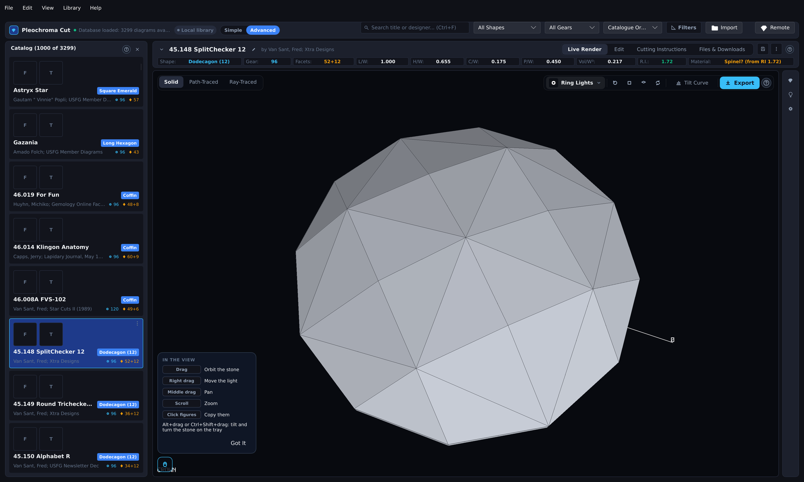
The window has the Catalog on the left, where the design library is searched and filtered, and on the right the selected design. The design header ends in four places: Live Render, the traced picture of the stone (section 3); Edit, the faceting CAD (sections 5 to 10 and 12); Cutting Instructions, the steps of the cutting sheet as cards (section 13); and Files & Downloads, the original files attached to the design, as cards with Save a Copy... and Copy URL buttons and an Open Exports Folder button. The Parameters dock beside the picture holds the Stone, Lighting and Render tabs.
The sections follow the window. Sections 2 to 4 cover the library, the viewport and the tilt sweeps. Sections 5 to 10 cover the faceting CAD. Section 11 is the rough planner, sections 12 and 13 are the solid view and export, section 14 is the render queue, sections 15 and 16 cover the tutorials and the interface, and section 17 covers installing the program and the command-line tool.
- Library and viewport (sections 2–4): a searchable design library, a live spectral path tracer with thirteen lighting rigs and eight built-in looks, body color tiles for the stone, Stone Shadow and Tray Reflection, optical diagnostics, per-design lighting, and tilt performance curves and videos.
- Faceting CAD (sections 5–10): a constraint solver and tier editor with nine templates, an overall verdict badge and cutting sheets whose meet points you can cut to; parametric relations between tier angles; concave tiers cut with cylinder, cone, circle, disc or sphere tools; frosted facets; an angle optimizer, Retarget, angle sweeps and a compare window with plain-words deltas; an undo history with thumbnails and saved variants; and a step-by-step cutting mode.
- Rough planner (section 11): ranks layouts of stones from a modelled block, cylinder or pebble, or from an OBJ, STL or PLY mesh of a non-convex rough, keeping clear of its inclusions. It can orient the stones to the rough’s crystal axis by a rule you can override.
- Solid view and export (sections 12–13): the Cut slider, drag handles, Slice, the faceting diagram, the printable cutting sheet, finished-stone exports and the file formats.
- Render jobs (section 14): a queue of still exports and tilt videos that renders one job at a time while you work, with a script export for rendering on another computer.
- Learning and interface (sections 15–16): 96 short tutorials, a “Build This Design” lesson for any library design, a Simple and Advanced switch, preferences, a built-in manual and a command palette.
- Install and command line (section 17): the Microsoft
Store, installing with Cargo, building from source, the log file, and the windowless
pleochroma-cli.
The native design file keeps all of this. A design with parametric relations is saved as design file version 3, a design with concave tiers as version 2, and a design with neither keeps the version it always had (section 13).
This page describes the desktop application. Most of the features added in
October 2026 exist only there; the web app page says
what the browser version has. The same engines also run without a window in
the command-line tool pleochroma-cli
(apps/pleochroma-cli), with the commands info, solve, metrics,
validate, optimize, retarget, sweep, snap-meets, export, render and tilt-video; see
section 17. Some controls named
below are hidden in the Simple interface; section 16 says which.
2The design library
The Catalog panel is headed “Catalog (N of M)”: the designs that match the
current search and filters, and all of them. Designs are stored in a local SQLite database
(pleochroma-vault) by default — no account, no telemetry —
though the library view can also switch to browsing the remote
coordinator's catalogue over the network instead. Filterable by shape, index-gear
tooth count, refractive-index range, length/width ratio, and facet
count. The shape filter is populated partly by automatic
classification: girdle facet count and length/width ratio identify a
confident round, triangle, square, hexagon, or octagon outline;
elongated shapes such as oval, cushion, and emerald are not
auto-detected and keep whatever label the source data or a manual edit
gives them. Import brings in single .asc, .gem
or .gcs files or entire folders (subfolders only when
Include Subfolders is ticked before you choose the folder); the
original file is preserved alongside the parsed schedule. The import runs
in the background with a progress bar, a file that cannot be read is skipped
with the reader's own explanation while the rest of the folder still
imports, and a summary lists what was imported, skipped, replaced or
converted with notes. A .gem or .gcs is stored
with a generated .asc and the original attached (see
section 13 for the formats).
The Library menu holds the whole-library actions. Regenerate All Preview Images..., Regenerate All Tilt Curves... and Regenerate Both... rebuild the cached preview thumbnails and tilt curves for every design in the library; each one asks first: Missing or Outdated Only (the default) renders just the designs that have no picture or curve, or one made with other render settings, and All Designs redoes the whole library. The Library menu is part of the Advanced interface. (The filter panel has a matching pair of buttons that regenerate just the filtered set.) Plan Rough... opens the Rough planner (section 11), which draws its candidate designs from this library.
The preview thumbnails are rendered in the white tray lighting, a bright white surround, with a head shadow of 8°, so that a stone’s body color reads at its true value and many designs compare side by side. They lie on a grey tray by default, so a colorless stone stands apart from its background; Thumbnail Backdrop in the Library Thumbnails card of the Render tab (Advanced interface) switches it to white or black. The live view’s default lighting, backdrop and its 16° head shadow are unchanged. A design with concave tiers or frosted facets is previewed with them.
Per-design actions are on the right-click menu of a card, on its three-dot button and in Library → Selected Design. They include generating previews and tilt curves, ignoring a design, excluding it from the Rough planner, and Build This Design, which turns the design into a step-by-step tutorial (section 15).
Some things you make around a design are kept in the library, not in the
design file: the variants you save (section
9), the cutting steps you mark done (section
10) and the lighting you save for the design
(section 3). The library finds them by the design's
id, which the .psdd file keeps in its metadata. Copying
the file to another computer copies the design and not this data.
3The 3D viewport
The Live Render view fills the detail area with the picture, and its border takes the color of the render’s own edge. The controls float over it. At the top left is the mode segment Solid, Path-Traced and Ray-Traced (below about 1000 px wide it reads Solid, Path and Ray). At the top right one toolbar holds the Lighting chip (a picture of the rig, its short name and a chevron, which opens the rig menu), the view tools Reset Camera, Front, Top and Turn 90° (a View menu in a narrow window), Tilt Curve and Optical Diagnostics, and the Export button. A Face-Up card at the left shows brilliance, fire, scintillation, windowing and extinction, each with a bar, and a Contrast figure; a Zones (ASET-style) block shows the Red, Green, Blue and Dark shares of the face. The ? in the card’s header opens a popover that explains how each figure is measured. Click the card to copy the figures. At the bottom right a status pill holds the pause and resume button, the stage, the samples so far and the time left, and at the bottom left a mouse button opens the gestures card. A problem (an out-of-date render with its Recompute button, a graphics-card status, a refused render) appears as one banner at the top centre that says what is wrong and holds its fix.
Left-drag orbits the camera and the wheel zooms. A middle-drag, or Ctrl + drag (Cmd on macOS), moves the stone within the picture, for example to frame it with its reflection; orbiting, zooming and Turn 90° keep it there, and Reset Camera and the named views Front and Top centre it again. Exports, tilt videos, render jobs and saved lightings that store a camera pose keep the framing. The progressive path tracer accumulates samples while the camera is still and resets on any camera or material change.
Stone Pose. Alt + drag (or Ctrl + Shift + drag) in the Live Render view turns the stone on the tray the way the camera orbit turns the camera, freely: dragging down rolls its top towards you from whichever side you look, dragging sideways turns it about the vertical, and it keeps turning past table up and table down instead of stopping there. The pose is stored as tilt, turn and spin in degrees; Optical Diagnostics cannot be combined with a posed stone.
Thirteen lighting rigs — an analytic studio rig in five moods (daylight, incandescent, a 2856 K Incandescent A, ring lights and a dark spotlight), eight lit models (a Grading tray hemisphere, the default jewellery light tent and its even white-tray, jewellery-shop and window-daylight variants (with a built-in Window daylight view that puts the light at 30°), a daylight sky without a sun, a daylight sky with a real 0.27° sun, and a green/red/blue contrast view in the style of an ASET scope, scored as the Grading tray; see the physics page) — plus an optional backdrop under the stone (a lit tray: White by default, Grey, Black or As Lit; the Studio Softbox lighting brings the Grey tray, Dramatic Spotlight and Presentation the Black one), a surface-glare slider that fades the white mirror image of the light on the table (the cross-polarised look; built-in presets only, never the readouts), and custom HDR equirectangular environment maps, are all supported, along with live readouts of brilliance, fire, scintillation, windowing, and extinction as the stone is orbited. The head-shadow slider (0–30°, default 16°, 0 is off), which darkens the facets that would reflect the observer's own head, changes those readouts as well as the picture under the lit models; the studio rigs and an HDR map ignore it. The Grading tray is the light the optimizer and Retarget score under. If the optional GPU compute path loses its device, the picture falls back to the CPU tracer with a visible status message, rather than freezing, and the device is tried again after 30 seconds, at most six times an hour. A zoned stone that the GPU cannot run is rendered on the processor.
The Parameters dock on the right holds everything that describes the stone, its light and the render options, in three tabs: Stone, Lighting and Render. It opens from the gem, light and gear buttons of the sidebar rail, from the View menu and with Ctrl+Alt+1, 2 and 3, and it is the same panel in Live Render and in Edit. Reset This Tab at the foot of a tab puts that tab’s defaults back.
The Stone tab opens with a material card: the material’s name, chips for its family, dispersion, the effective refractive index (RI) and the critical angle, and a Material Menu. Under the chips sit the gem data of the material: chips for specific gravity, Mohs hardness and toughness, and a cleavage line with a warning when the stone cleaves easily; Material Details… opens the full page with parting, fracture, care and the sources. Below it are the Material list, Preview As... (the stone in another material without changing the design, marked by a Previewing badge with a Back to Design button), the body colors as tiles (see below), the Color Pattern card and the stone width. The effects of the individual stone sit in folding cards: Crystal Axis, Girdle & Edges, Clarity, and Play-of-Color or Schiller. Choosing a material or a color is an undoable edit of the design.
The Lighting tab has a rig card with a Change button that opens the gallery of rigs; Main Light, with a dome seen from above to drag the light on, two typed fields for its azimuth and elevation, and the exposure; Surroundings, with the backdrop, Stone Shadow, Tray Reflection and the HDR environment map; a Viewer card with Surface Glare and Head Shadow; and Saved Lightings as chips with a picture of the rig. The rig menu of the Lighting chip lists the saved lightings first, then the rigs in the groups Lit Models, Studio and Analysis, then Save Current Lighting..., Use This Lighting for This Design and All Rigs and Settings.... With an HDR map loaded, the dome becomes the map’s rotation dial (Map Rotation), and the Turns with the Camera switch keeps the map fixed to the view, so that orbiting turns the stone under the same surroundings; off keeps the map fixed in the world. The turn is saved with a saved lighting and kept by exports, render jobs, remote renders and tilt videos.
The Render tab opens with four quality tiles, Draft, Balanced, High and Custom, that set the target samples, the resolution and the bounces; changing a detail switches the tile to Custom. Cards below hold the Live View Details, Compute, the Ray-Traced View, Library Thumbnails and where exports start from.
Shader cache. The Path-Traced and Ray-Traced renderers run on the graphics card, which compiles its shaders before the first picture. The program builds them in the background as soon as it starts, Ray-Traced first, then Path-Traced, beginning with the open stone’s material. A card at the bottom right, Building the Shader Cache, shows a progress bar for each renderer, and Hide puts it away while the build goes on. A render that waits for its shaders says so in its progress line. The build runs after an install or an update; later starts load the finished cache and show no card. With Local Compute set to CPU nothing is built.
Two settings in the Surroundings section of the Lighting tab change what the stone sits on. With Stone Shadow (off by default) the stone casts its shadow and its colored light onto the backdrop, as a stone on paper does: a ruby tints its shadow red, and a dispersive stone can show rainbow fringes. Five built-in views switch it on, the ones on a white or grey tray (see the table below). Tray Reflection (0–100 %, off at 0) turns the tray into a glossy surface. The value is its reflectance seen straight on: about 4 % looks like black acrylic or glass (with the Black backdrop, the classic jewelry-photo look), 100 % is a mirror, and glancing views reflect more. The stone appears mirrored in it, and light reaches the pavilion from below. Both can be on together, and the tray touches the culet. No built-in view switches Tray Reflection on, because a glossy tray mirrors the studio lamps as bright blobs; add it where it suits the picture. They need a studio light with a backdrop, so their rows dim with an HDR map, As Lit or the contrast view, and a note says why. The live view computes a preview shadow map in the background; exports, render jobs and remote renders compute a final one before tracing. A graphics card that cannot run them leaves the Path-Traced picture to the processor. Both belong to saved lighting and to a design’s own lighting. The readouts, catalogue previews, tilt views and tilt videos leave them out.
Every built-in lighting is metered like a camera’s light meter, so at exposure 1× white paper shows as the same off-white sheet under the dim daylight sky and under a bright studio spotlight alike. Exposure is the last row of Main Light in the Lighting tab, a slider from 0.2× to 5× (default 1×): a correction on top of that reading. A loaded HDR map is not metered and ignores it. The light direction is an azimuth (0–360°, default 48°) and an elevation (about 8.6° to 88.8°, default 72°), set by dragging the dot on the dome of the Lighting tab, by its two typed fields, or by right-dragging (or Shift + left-dragging) in the viewport; it moves the light tent's softbox, the sun and the studio key light, and the Grading tray does not depend on it. With an HDR map loaded, the same drag turns the map instead. A view is a saved lighting: the lighting rig plus a light direction, an exposure, a surface glare, a backdrop, a head shadow, Stone Shadow and Tray Reflection, and an HDR map if one is loaded. One that also stores a camera pose sets the camera too, with the stone’s place in the picture, and the others leave the camera alone (the Grading tray fits the stone in the picture). Eight come with the app, and the Saved Lightings chips of the Lighting tab also hold the ones you save yourself (Save Current..., with a switch to include the camera pose), each markable as usable in the export dialog:
| View | Lighting preset | Azimuth / elevation | Exposure | Stone Shadow |
|---|---|---|---|---|
| Studio Softbox | Gem Studio Ring Lights | 48° / 54° | 1× | on |
| Daylight Bright | D65 Daylight (6500K) | 30° / 65° | 1.3× | on |
| Dramatic Spotlight | Dramatic Dark Spotlight | 300° / 25° | 0.7× | off |
| Light Tent | Light tent + black cards | 48° / 72° | 1× | on |
| Grading tray | Grading tray (D65 hemisphere + head shadow), seen from almost straight above | 48° / 72° | 1× | off |
| Daylight Sun | Daylight sky + direct sun | 30° / 55° | 1.5× | on |
| Window daylight | Window daylight | 40° / 30° | 1.2× | on |
| Presentation | Gem Studio Ring Lights over black velvet, the showcase look of a jeweler’s photo | 48° / 54° | 1.4× | off |
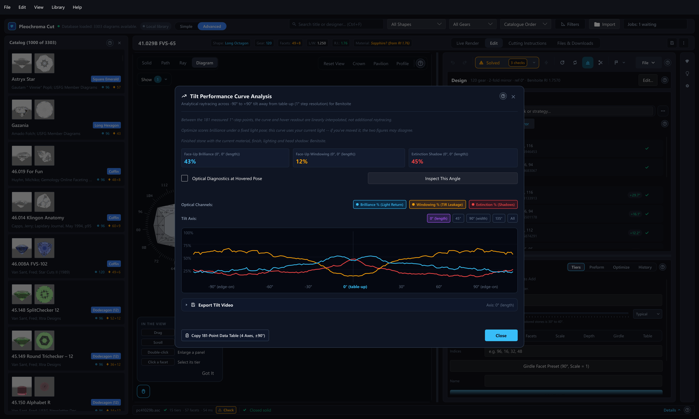
The body color of the stone is chosen in the Stone tab; it shows the stone in another color without making a custom material. The tiles are Material Default, the color variants of the material (and your own saved ones), nine ready-made colors (Clear, Blue, Red, Green, Violet, Yellow, Pink, Teal and Amber) for a material that has one color in every direction, and a Custom tile, which opens a color editor with three sliders, Tone, Saturation and Hue (the L*, C* and h of the L*C*h color space), and a hue, saturation and brightness picker as an alternative. A stone with two body colors shows split tiles. A pleochroic stone keeps its pleochroism: the editor has one such color for each direction of the crystal, and Save as Variant... keeps the result. When the view shows the design that is open in the editor, the pick becomes that design’s own color, in one undo step. For anything else, such as a design you only browse, the pick changes this view only and the app remembers it. Whatever color the view shows is also the color of the metrics, the tilt curves, high-resolution exports, the tilt video and renders done by remote workers. A material that defines its own color disables the color tiles.
The same color editor opens from two more places: Pick... in the Material Editor, where Save keeps the color in a custom material, and Custom Color... in the color control of Preview Color and of a library row, which change only the view. The color of a gem depends on the length of the light path, so the editor shows what you chose as four swatches, at 3 mm, 5 mm, 10 mm and This stone (the design's own size, 5 mm while no girdle diameter is set), and the design keeps it as an absorption spectrum per millimetre: a larger stone renders deeper and a smaller one lighter. A badge says Reachable with the color difference (Delta E) from your request, or in amber that the color is not fully reachable at this size and how far the closest reachable color is; very rich colors are not all reachable. A custom material keeps its seven-band color, and the web app has the same editor.
A design can also remember its lighting. Use This Lighting for This Design in the Lighting tab saves the lighting rig, the light’s position and height, the exposure, the surface glare, the head shadow, the backdrop, Stone Shadow, Tray Reflection and a loaded HDR environment map. It does not save the camera. The lighting is kept in the library under the design's id and never in the design file. It is applied when the design is opened in the editor, and not when you click a row in the catalogue, so you can compare many designs under one lighting.
Optical Diagnostics marks where light is lost or returned.
In Live Render, press the toolbar’s Optical Diagnostics button, tick Enable Optical
Diagnostics and pick the
layers: Windowing (/) as cyan lines, Extinction (X) as
magenta crosses, Brilliance (Dots) as green dots and Fire
(Dispersion Potential) as gold stipple. The layer is a separate analytical
pass aligned with the camera and drawn over the picture. It is off at first,
its opacity starts at 45 %, and it does not change the render. A small map
(128 pixels on the long edge, one sample) appears when the view settles, and a
320-pixel map of four samples replaces it. Refresh Diagnostic Map recomputes it, Diagnostic Map on Neutral Stone replaces the parts of the stone you did not select with neutral grey, and the layer is not available under the contrast view (ASET). The figures are shares of the
stone’s visible area, so they differ from the live readouts. A still
export can include the layer with a .optical.txt legend beside
the picture, the tilt video can include it with a caption, and a render job
keeps the choice.


A custom material can be entered as a Sellmeier fit (one or three terms) or a Cauchy fit instead of two sliders. The editor shows the index at the sodium, blue and red lines and the Abbe number. It refuses a curve with a resonance inside 300–800 nm, an index that does not stay above 1 or an index it cannot calculate, and it warns about curves that are possible but suspicious. The stone is then traced with the full curve on the GPU, on the CPU and on remote workers (see the materials page). The Material Editor also takes your own gem data for a custom material: hardness, toughness, cleavage, fracture, care and a source.
Help → Material Reference… opens the Material Reference window: every built-in and custom material in one sortable, searchable table with its specific gravity, hardness, toughness and cleavage, and a details page for each. The figures are on the materials page.
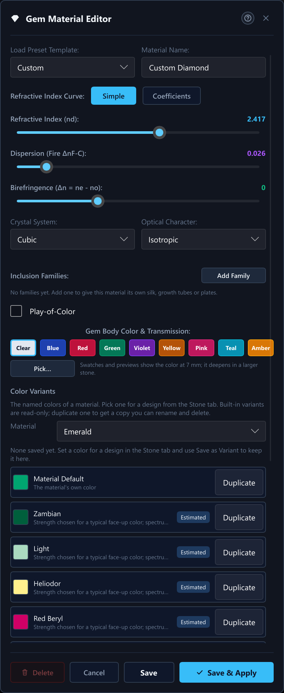
Color patterns
A custom material can have zones of different colors, for example a pink core inside a green rim. The Material Editor’s Color Pattern section (Add Pattern..., Edit Pattern..., Remove Pattern) opens the Color Pattern Editor, a window of its own with the stone as the largest thing in it and the pattern’s layers in a panel on the right. A header button, Start From..., opens a gallery of ready patterns: the typical patterns of the stone’s species, the templates (Uniform, Bicolor, Tricolor, Banded, Watermelon, Reverse Watermelon, Core and Rim, Split and Sectors) and your own presets, which you add with Save Current.... The editor has its own Undo and Redo.
A switch at the top left of the picture chooses the view. Stone renders the open design with the pattern, Slice shows a flat cut through the stone and Crystal draws a rod of the pattern along its axis. In Slice every zone has handles, one to move it and one to resize or turn it, a rail at the edge moves the cut from the table to the culet, and a click on a zone selects its layer. A bar along the bottom of the stage holds the settings of the whole pattern: the Axis (Table Normal, Across, Across Turned or Custom, or Follows Crystal Axis), the Edges from Sharp to Soft, and the Size, which either scales with the stone width or stays fixed in millimeters.
A pattern has a base zone and up to four more zones. The layers are listed with the top layer first, and an upper layer covers the ones below it. Each layer is a card you can drag to reorder, hide with its eye icon, and rename or duplicate from its ... menu. The selected layer shows a large color tile for each color the zone has, which the material’s crystal decides: one for a cubic or amorphous material, Along c and Across c for a one-axis crystal, and α, β and γ for a two-axis crystal. A tile opens a color picker with a plane of lightness and chroma, a hue strip and fields for L, C and H, and a From variant menu takes the colors from a color variant of the material. The Advanced interface adds the zone’s shape (cylinder, three-sided prism, six-sided prism, slab, stripe or wedge) and its measures. The preview is live, and Save to Material keeps the pattern for the material and closes the window.
Patterns show in the Path-Traced views, in render jobs and on remote workers that support zoning; the Ray-Traced view shows the base color. The materials page has more.
The Live Render picture follows the Edit tab's Cut slider (section 12) and shows a badge with a Show Finished button while the stone is cut back. A stone with concave tiers (section 7) is traced with its tools on the GPU and on the CPU, up to the 128 tool placements a design can hold. A remote worker receives the tools with the scene and traces the same stone.
4Tilt performance sweeps

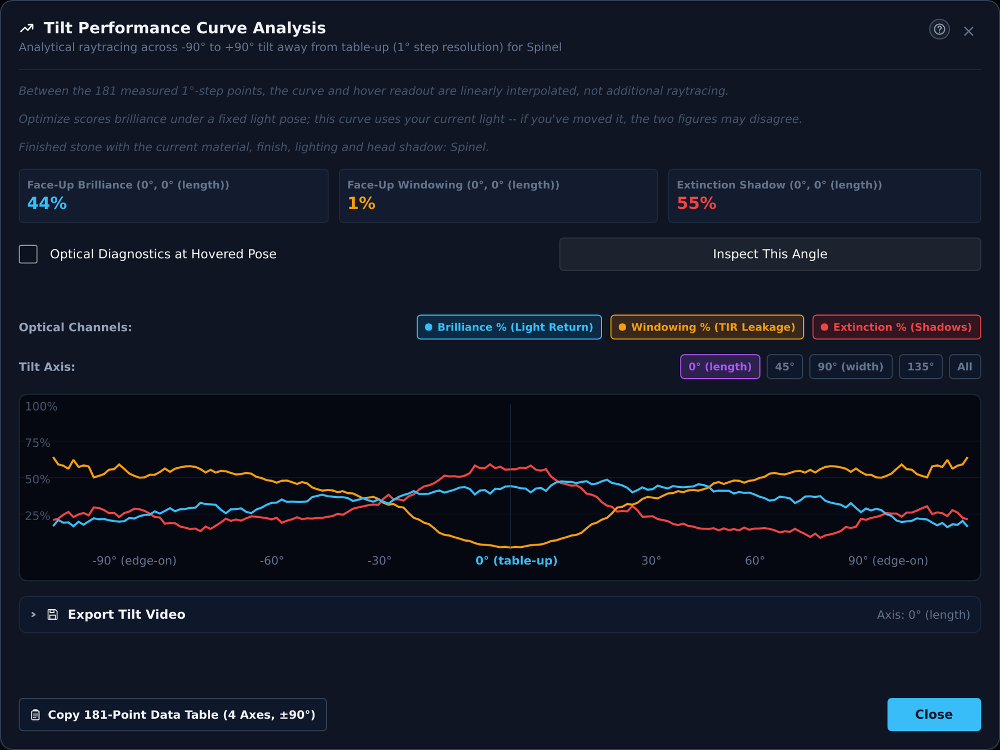

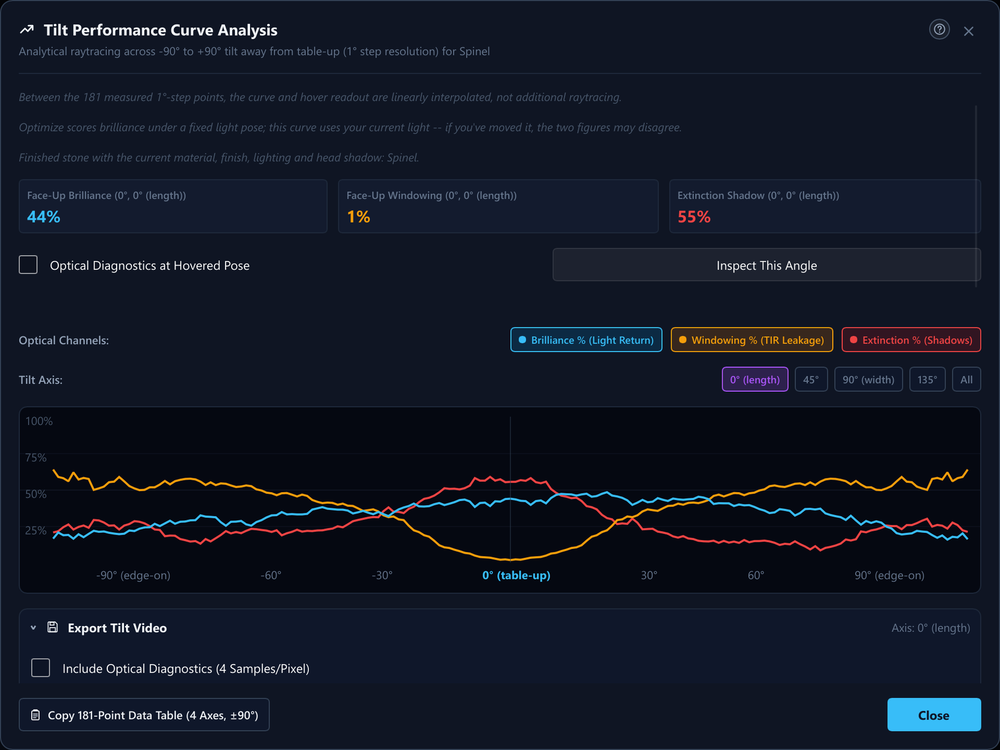
The dialog opens from the Tilt Curve button of the Live Render toolbar and from Tilt Chart in the Edit view’s command bar; the Simple interface hides it.
A cut that looks brilliant face-up can black out or window heavily at a
few degrees of tilt. Pleochroma sweeps a 181-point tilt profile
(±90°) at each of 4 fixed camera azimuths — 0°, 45°, 90°,
135° (PROFILE_AZIMUTHS_DEG, crates/pleochroma/src/color/metrics/profile.rs)
— and plots brilliance, windowing, and extinction together so a design's
behaviour in the hand, not just face-up, is visible. The curves follow the
stone’s frosting (section 5): a frosted
facet scatters light, so a frosted design’s curves differ from its
polished ones. A design without frosting is swept exactly as before.
A tilt sweep can also be exported as a video: pick one of the four
camera azimuths as the sweep axis, a step from 0.01° up to 5° between
frames (MIN_STEP_DEG/MAX_STEP_DEG,
apps/pleochroma-cut/src/gui/tilt/video_export/params.rs),
and a resolution from 128 × 128 up to 8K (7680 × 4320), or a custom
size clamped to the same 128–8192 px range per axis. An optional
performance overlay burns the brilliance/windowing/extinction readout
into each frame in a layout that adapts to the chosen width. Every
frame renders through the same local CPU/GPU/hybrid setting and
configured remote coordinator as a still-image export — not a separate,
CPU-only tracer — including the same Transfer choice while a
remote is configured: Full Data merges the remote's samples
with the local lanes, Final Picture Only has the coordinator
send one finished PNG per frame while the local lanes stay idle. The
live viewport pauses for the whole video's
duration exactly as it does during a still-image export, and never
shares the app's single GPU adapter with it while it runs. The
numbered PNG sequence is then muxed into an H.264 MP4 with
ffmpeg when it is found on PATH, an animated
GIF via the image crate when it is not, or, failing both,
left as a PNG sequence with a README.txt explaining how
to mux it by hand.
5Constraint solver and tier editor
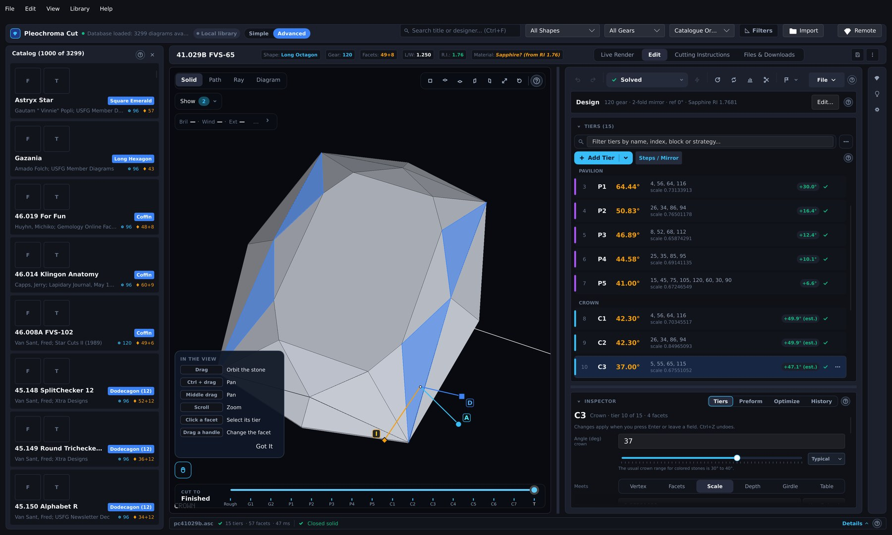
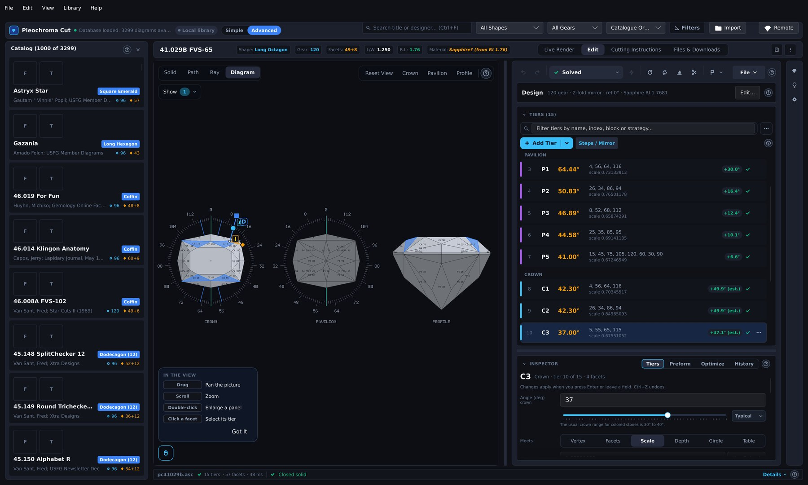
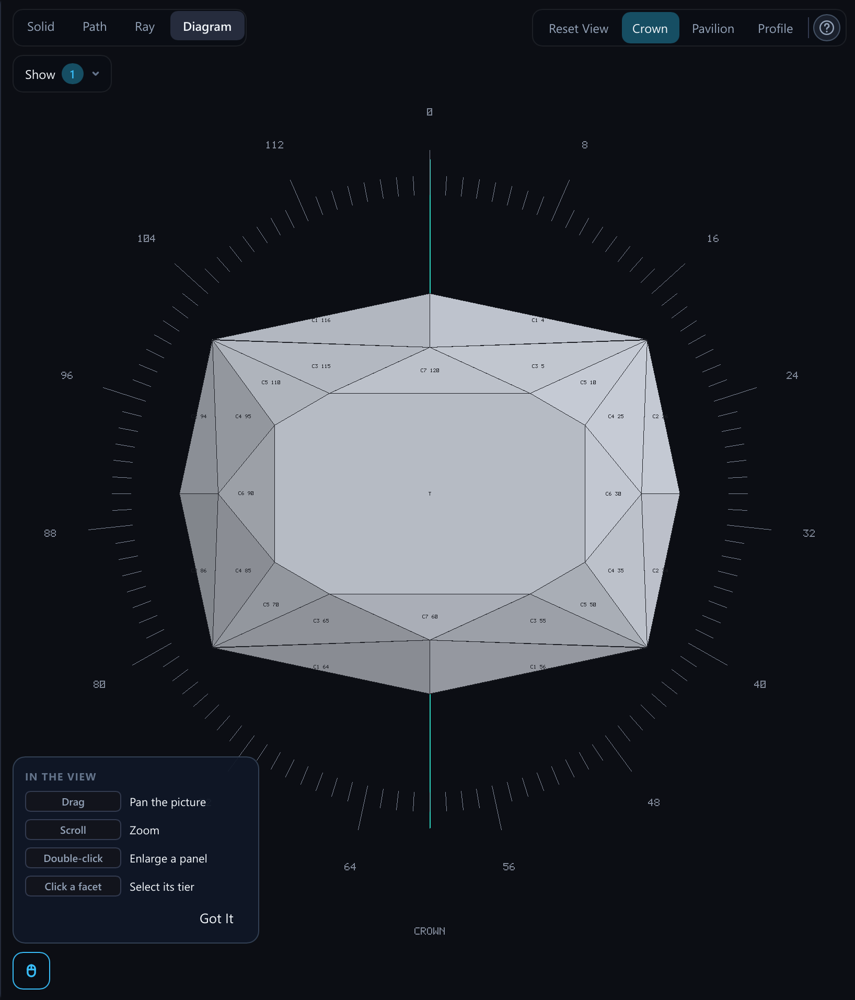
The Edit view has a command bar, the tier list and the inspector. The command bar holds Undo and Redo (their hints name the edit), Solve as a split button (the chevron beside it holds the Auto-Solve menu and Abandon Solve), Deep Solve (Advanced), Retarget..., Tilt Batch..., Tilt Chart, Cut Mode, the Baseline menu (Advanced) and a File menu. The tier list shows the tiers flat, in true cutting order, with block stripes and headings, the step number and the full indices of each tier, and a mark on each row for its state, frost and links. A row’s ... menu, which a right-click opens too, holds Adopt, Pin, Add Anchor, Complete Orbit, Move Up, Move Down, Duplicate, Surface Finish and Delete. + Add Tier above the list adds a tier, and the Add Tier Menu beside it holds Tier, Concave Tier, the quick-add items Table, Girdle and Culet, and the Girdle Facet Preset. The inspector below has four tabs, Tiers, Preform, Optimize and History; the cutting order is on the Cutting Instructions page (section 13), not in the inspector. The view toolbar floats over the solid (section 12). A failed solve or an unclosed stone shows a banner over the solid that names the tier and holds its fix. Every tier is labelled in every diagram view, and a facet too small for its code gets the code outside the stone with a leader line.
Cutting instructions are a geometric constraint graph, not a static list of
numbers. A meet-point instruction ("cut tier P2 until it meets P1 and G1
at a single point") specifies a facet's depth implicitly; the solver in
crates/pleochroma/src/geometry/meet_solver resolves that
depth by intersecting the facet plane with its neighbours' already-known
vertices, walking the schedule in dependency order so that changing one
tier's angle recomputes every tier that depends on it. Where a design
has no .asc file to anchor against, the solver can instead
anchor a block against the design's own printed C/W/P/W
proportions (meet_solver/anchors.rs).
Solving runs on a background solve service (one persistent worker thread with last-wins request coalescing and real mid-solve cancellation) once a design is large enough that solving stops being instantaneous; the Solve button reads Abandon Solve while it runs, Deep Solve and Optimize have a Cancel, and a status-strip activity list shows every long-running operation — background solve, Deep Solve, Optimize, Retarget, a tilt curve or video export — with elapsed time and, where the operation can measure one, a progress fraction. Editing the design while a solve is in flight discards the stale result rather than applying it over a newer edit, and every analysis result the editor keeps on screen (Retarget's proposal, a tier's manufacturability warnings, the tilt curve cache) carries a stale badge the instant an edit invalidates it, cleared only by re-running that analysis.
A pavilion tier's row shows a color-coded critical-angle margin bar
next to its angle field, live as you type, and the first time (per
session) a design has no anchor tier, a one-time explainer card walks
through why the solver needs one before you hit the "no anchor"
status message cold. New designs start from an empty-state card
offering the New Design dialog's template gallery or an in-app guided
worked example. New Design always opens a design: even
the Empty template leaves a zero-tier design with its preform in the
viewport, a "no tiers yet" hint and an + Add Tier
button. The worked example (Help → Guide: New Design Walkthrough) walks
you through building a simple round-brilliant-style stone yourself,
tier by tier — it does not build the stone for you. Each step lists its
actions as numbered lines with the exact values to type, outlines the
control it is about, and moves on by itself once its goal is reached —
the tier exists with the right name, angle and indices, the material is
applied, the design solves to a closed stone — whichever route got
there (the tier form, a quick-add button, an inline edit, Undo/Redo, or
auto-solve); a status chip reads "Waiting for: …" until then.
Skip Step moves on without the goal, Back returns to
the previous step, and the two reading steps wait for Next.
Controls the current step does not use are locked — dimmed, with a
tooltip saying so, keyboard shortcuts included — until the guide is
closed. The guide panel sits beside the tier table on a wide Edit
layout and floats at the window's right edge everywhere else, where it
can be dragged out of the way; either way it collapses to a small
"Guide · Step N of M" pill
(apps/pleochroma-cut/docs/manual/07-new-design-worked-example.md).
A full keyboard-shortcut overlay is one press of ? away
(or Help → Keyboard Shortcuts) whenever no text field has focus.
The tier form
The inspector's Tiers tab edits one tier at a time. A change to an existing tier applies when you press
Enter or leave the field, so there is no Save Tier button; a new tier is written by
Add This Tier. Number fields take a
plain number or a small calculation: 41.5+0.3 and
(90-41)/2 are worked out by the app. The same holds for the
exact scale value, the cheater offset, the preform fields, the girdle
diameter, the specific gravity override, the gear reference angle, the
symmetry order and the Offset box for a group of tiers. Text in the Angle
field that starts with = is not worked out once but kept as a
relation (section 6).
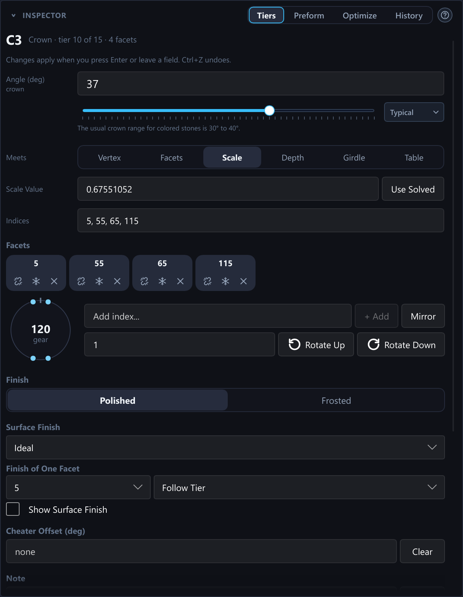
The Indices field takes values from 0 up to
and including the gear's tooth count, because the index wheel is a ring. On
a 96-tooth gear, 96 is allowed and names the same position as
0; the app keeps the number as you typed it. A value outside
the range is refused with a message that names the range, and so is the same
position listed twice. Two shorthands save typing: 0:12:96
counts from 0 in steps of 12 and stops before 96, and 12 x8
spreads eight evenly spaced copies around the wheel. A refusal appears
directly under the field it is about, and that field gets a red border.
A pavilion or crown tier also has an angle slider and a Typical menu. The slider runs from 30° to 55° for a pavilion and from 15° to 55° for a crown, snaps to 0.05° (0.01° while Shift is held), and on a pavilion marks a green band from 1° to 6° above the stone's critical angle. The menu lists common angles with a one-line reason each: for a pavilion the standard angle for the material, the critical angle plus 2° and plus 4°; for a crown the standard angle and 25°, 32° and 40° for a low, medium and high crown. Both only fill the Angle field, and the angle applies as one undoable edit when you let go of the slider or choose an entry. The preform proportions have sliders with the same rule, and Apply Preform applies them.
Below the form, a row of chips detaches or removes single facets of a tier, a position box adds one, and Mirror and Rotate (Advanced) reflect or turn all of the tier's indices around the wheel. A tier's angle can also be edited in place in the tier table (double-click or F2) and nudged with the arrow keys. The arrows follow what the table shows: a pavilion angle is printed without its minus sign, so Up makes the shown number bigger. A burst of nudges is one undo step. Ctrl+D duplicates a tier (the copy goes right after the original), Alt+Up and Alt+Down reorder it, and Ctrl+click or Shift+click select several tiers for one batched nudge. Select in the Tier List Menu shows a check box on each row instead. With two or more tiers selected, a bar above the table shows N selected, Clear, Delete and an Offset box: type the degrees (a calculation works) and press Enter or Offset, and every selected tier's angle moves by that amount as one undo step. You do not have to click a row first.
Frosted facets
A tier can be cut frosted: a matte, light-scattering finish instead of a polished one. In the Tiers tab the Finish row has a Frosted check box that frosts every facet of the tier at once, as one undo step. In Advanced mode each facet chip also has a frost button for frosting single facets, and a note says that some facets of the tier are frosted. The tier table marks a frosted tier with a frost icon. A concave tier has no frosting setting. The Frosted Girdle switch on the Stone tab, which draws the girdle band matte, is a separate setting.
The frosting is part of the design. It is saved in the .psdd
file, and a design with no frosting is written exactly as before. Gem Cut
Studio .gcs files carry it both ways: a frosted tier or facet
in an imported file stays frosted, and Export as Gem Cut Studio writes it
back. An .asc file has no field for it, so exporting one writes
the geometry and a dialog titled Frosting Is Not Part of This Format
says so. The cutting sheet marks the tier (Frosted), or lists the
frosted facets. The library keeps the frosting of each design, so
its traced previews show the stone frosted.
The live render, the Compare window, exports, render jobs and remote workers all draw a frosted facet as a ground finish, and the tilt curves follow it (section 4). The live readouts, the optimizer, the angle sweep and the Compare figures still treat every facet as polished, so a frosted design’s tilt curves and those numbers can differ on purpose.
Templates
The New Design dialog is a gallery of nine templates and a blank design. The
five everyday shapes are a round brilliant, an oval, a cushion, an emerald
step cut and a princess cut. The other four are a shallow and a deep round
brilliant and two teaching designs. You pick the material, the index gear
and the stone's width in millimetres, and the stone is built on its own
rough and solved, so a closed stone is on screen at once. Each template is
checked to close on every gear the dialog offers for it
(crates/pleochroma-cut-core/src/templates.rs). The built-in templates are
meet-point designs, so their cutting sheets name real corners; the Oval, Cushion,
Princess and Emerald were redesigned for that. If the
material's refractive index differs from the one the template was designed
for by more than 0.02, the pavilion angles are first adapted with the
Retarget Shift method below. The adapted stone is kept only if it passes
Retarget's validity check; otherwise the template's own angles stay and a
warning says why.
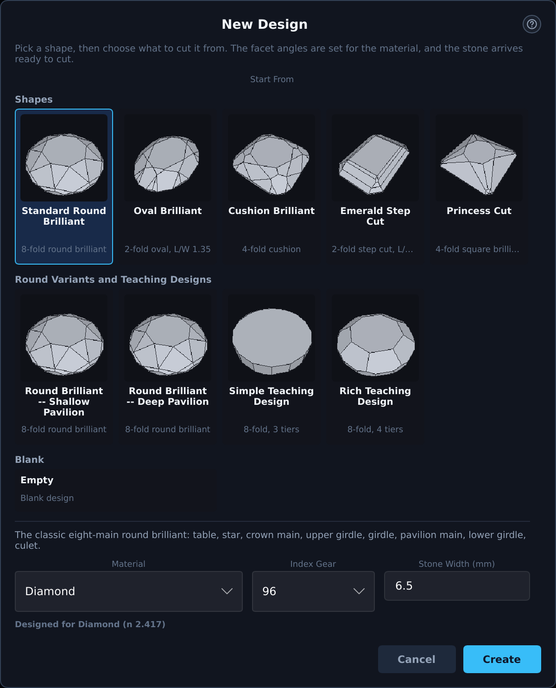
The overall verdict
A badge in the status strip sums the design up in one word: Good, Check or Problem. Click it for the reasons, worst first. Each reason has a Show button that selects the tier it is about and, where a safe tool exists, a Fix button. The fixes are: snap an index to the nearest gear tooth; remove facets that a later tier cuts away; move a tier to just after the last tier it meets; move the depth of tiers with no meet point onto the nearest corner (Snap to Meets); steepen a pavilion facet to the critical angle plus 2°, turned about its girdle corners so the girdle outline stays; and add a flat table. A fix is planned on a copy of the design, refused with a plain sentence when it cannot be made safely, and is one undo step. The badge is recomputed after each solve and stays dimmed after an edit until the next one. When the design has checks to report, the Solve button reads Solved and an N checks chip beside it opens the details.
Besides the structural checks, the verdict uses three quick table-up figures
in the design's material: windowing above 15 % is a Check and above 30 % a
Problem, extinction above 40 % and 60 %, brilliance below 25 % and 10 %. The
windowing limits are the ones to trust most. The other two are loose
starting points, kept as named constants in
crates/pleochroma-editor/src/verdict.rs.
Meet points and a level girdle
Two checks are about cutting the stone rather than how it looks. A cutting sheet names a
meet only if that corner is already on the stone when the tier is cut
(section 13). The check Tiers have no meet
point lists the tiers whose facets reach no corner of the stone cut so far, each
with how far it passes from the nearest corner (“P2 (0.12 mm off)”); the
cutter has to set their depth by measurement. This is common after Optimize, which sets
each depth for the best optics and not for a corner. Its fix, Snap to
Meets, asks first and then moves the depth of each listed tier that is set by an
explicit depth onto the nearest corner of the stone cut so far, when that corner is within
2 % of the stone’s size (0.2 mm on a 10 mm stone). The anchors never
move and no angle or index changes. The new depths can cut small tiers away; the dialog
names them before you confirm, and one Ctrl+Z undoes the move. The command-line tool has
the same move as snap-meets (section 17).
The check Girdle not level reports a girdle that is thinner in some places than in others because facets cut into the girdle line, and names those tiers (“The girdle is not level: it is 0.26 to 0.40 mm thick. P3 and C3 cut into it.”). The small scallop where two break facets meet in the middle of a girdle facet does not count. This check has no Fix. The girdle thickness is read at the girdle line, its thinnest point, by the Preform readout, the targets and the checks alike.
Editing the instructions as text
Edit → Edit as Text... shows the open design's cutting
instructions as .asc text with freshly solved masts, and lets
you change them. A live check names the line of any problem, and before you
apply, the dialog lists what Apply would change and what it would
lose. Apply is one undo step. The text carries no tier ids, so tiers are
matched by name, then by angle and indices; a tier that stays keeps its
note, cheater offset, depth target and relation. The text leaves out what an
.asc cannot hold: notes, cheater offsets, targets, relations,
concave tiers, the preform, the material and the girdle size. Apply never
changes the preform, the material or the concave tiers. The dialog can lay
the text against the saved file or the Baseline, line by line, with added
and removed lines marked. While a design has concave tiers, the gear cannot
be changed in the text, because the tool placements follow the gear.
Retarget for another material
Retarget... (see the figures below) proposes new crown and pavilion angles for another material and shows every change before anything is applied. The target is a built-in material, a custom one or a typed refractive index. Shift keeps each pavilion tier's margin over the critical angle; it is instant and always gives the same answer. Optimize starts from the Shift result and, when you press Search, looks for a better stone in the target material. It may move every crown and pavilion angle by up to 3°, 6°, 10° or 15° from its Shift angle, tries 100, 300 or 800 trial stones (Quick, Normal or Thorough), and offers up to three valid options, scored under the Grading tray whatever lighting the viewport shows. An option can carry a label for what it is best at: Best optics within limits, Closest to original or Balanced. The Crown Handling control (Advanced) says how the crown follows the pavilion. By default Crown Follows the Pavilion: a steeper or shallower pavilion makes the stone deeper or shallower, and every crown angle is scaled by the same vertical stretch, so the stone keeps its silhouette (crown height against pavilion depth) and its table size. Switch that off to use a Fraction of Shift slider instead (0 % leaves the crown alone), or tick Scale Crown by Ratio Instead to scale every crown angle by the ratio of the two critical angles, which wins over the other two.
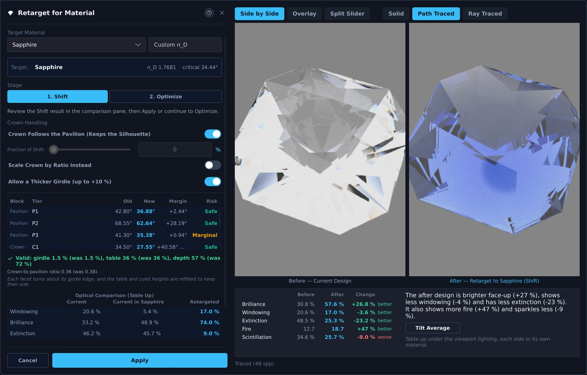
Keep the Design's Look (Advanced, on by default) scores every option, and the Shift start it is compared with, with a penalty for drifting from the design's table size and its crown-to-pavilion ratio, so the search prefers options that look like your stone; the verdict quotes the depth and the ratio next to the old ones. Switched off, options are ranked by the optical score and the yield alone. The search never lets a pavilion angle fall below the target's critical angle plus the margin the design has now (at most 2°), so brilliance cannot be bought with a window.
The table, the culet and the girdle never move. The table and culet are listed greyed as Not changed, and the girdle is not listed. A moved angle keeps its sign and stays between 1° and 89.5°. Each facet turns about its girdle corners, so the girdle keeps its outline, and the table and culet heights are refitted so they keep their size. A tier whose angle follows a relation is not changed on its own; it follows the tiers it reads.
One exception keeps a change valid: Allow a Thicker Girdle (up to +10 %), on by default in Advanced mode. When the new angles would pinch the girdle at its corners, Retarget thickens the girdle band by 5 % and then by 10 % (never thinner) before giving up. Only the thickness changes: the plan view, the table and culet size and the crown-to-pavilion ratio are kept, the total depth grows by the girdle change, and the result text says which step was used.
Every result is checked against the original stone before Apply is allowed. The dialog says Valid, with the girdle, thinnest-point and table figures, or Not valid with the reasons: the facets no longer close; a meet of the original stone would split, or one of its facets or edges would disappear (section 8); the girdle disappears or becomes less than half as thick, overall or at its thinnest point (the corners of a faceted girdle); the table falls below the top of the girdle or the culet rises above its bottom; a tier loses facets; facets become too small to cut; or a relation can no longer hold. When the plain Shift is not valid, the dialog says so and points to Optimize. Compare... keeps working on a change that is not valid, so you can see what goes wrong. If the original design itself does not solve, nothing can be compared, the dialog says so, and Apply stays off. Apply is one undo step that covers the angles, the heights and the material, and it commits the stone that was checked.
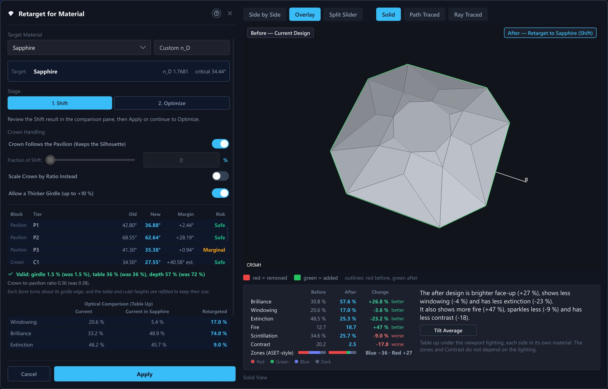
The Risk column depends on the block. A pavilion row shows its margin over the target material's critical angle: Safe at 2° or more, Marginal from 0° to 2°, Windows below 0°. A crown row shows an estimate, marked est., of the same margin for light entering through that crown facet, read against the retargeted main pavilion angle. It follows a single ray, so read it as a guide. The table and culet rows have no margin. A small table also compares three stones on windowing, brilliance and extinction: the current design in its own material, the same design in the target material, and the retargeted design.
Changing the index gear
The Index Gear list in the Design settings panel changes the wheel a design is cut on, for example from 96 to 64 teeth. Pick the gear and press Apply Gear; the button carries an asterisk while a change is waiting. Nothing changes yet: a Confirm Index Remap dialog lists every tier with its old and new indices. Each position is carried over in proportion to the new tooth count. A position that does not land on a whole tooth of the new gear is rounded, and its row is shown in red, so look at those rows before you confirm. In Advanced mode a Rounding list chooses how: Nearest (the usual), Floor or Ceil, so a position you placed on a half tooth does not move the other way. Confirm Remap applies the change and Cancel keeps the old gear. The angles and the meet constraints are not touched, and concave tiers move with the gear.
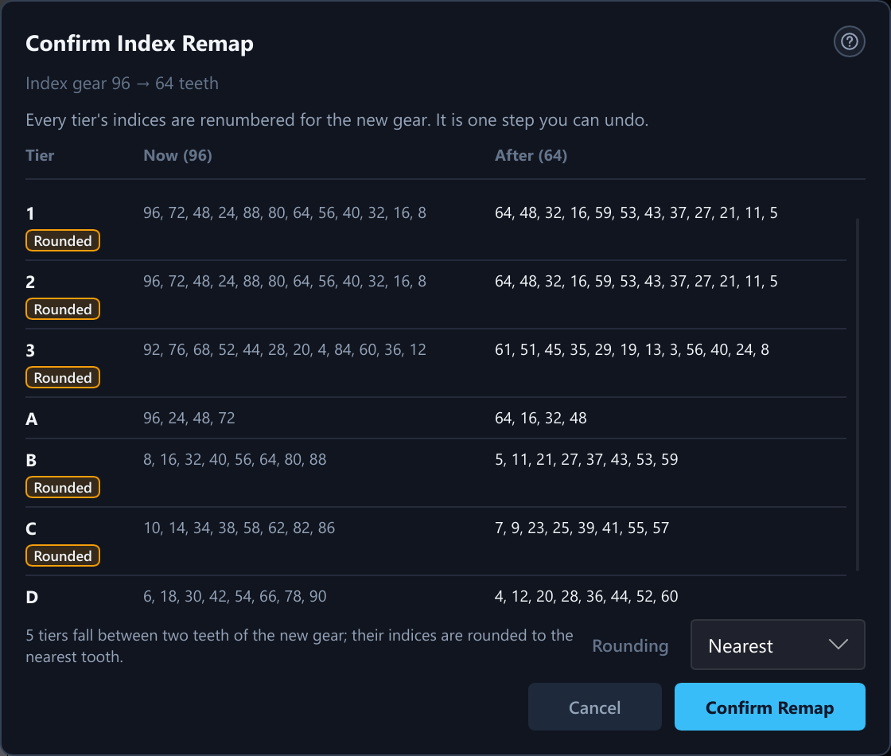
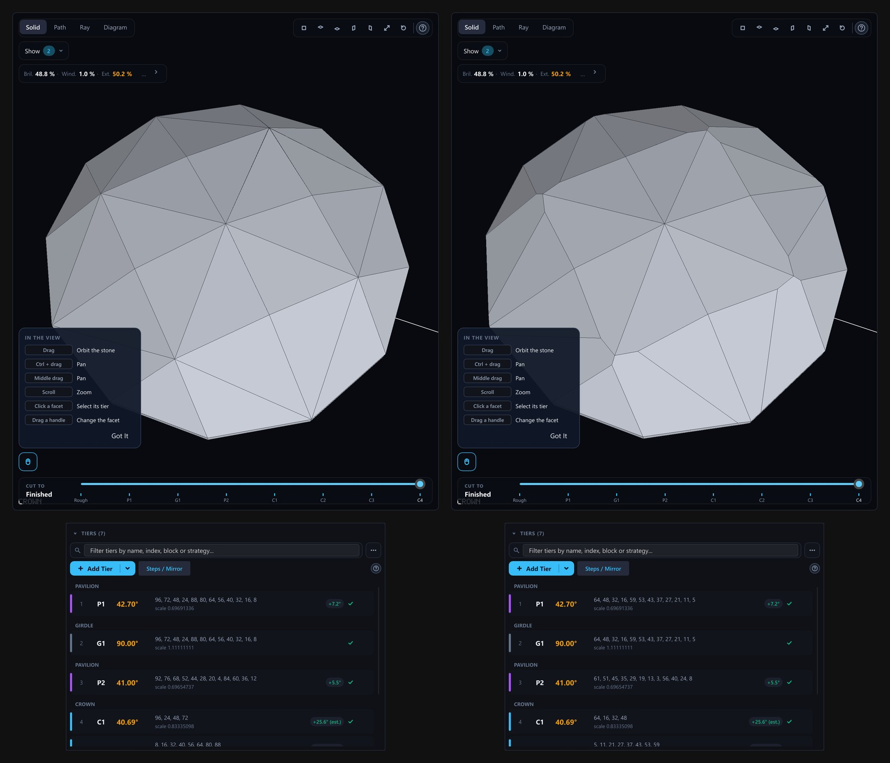
6Parametric relations
A relation makes one tier's angle follow other tiers'
angles instead of being a number of its own. If P2 follows P1 with the
relation P1 - 2, P2 is always two degrees shallower than P1:
change P1 and P2 moves with it, in the same undo step. Relations suit things
that should stay in step, such as a ladder of step cuts, a main that sits a
fixed number of degrees from its break, or a facet halfway between two
others.
To make one, start the Angle field of the Tiers tab with =,
write what the angle should follow, and press Enter.
| You type | The angle becomes |
|---|---|
=C1-4 | 4° less than tier C1 |
=(P1+P3)/2 | halfway between P1 and P3 |
=P1*0.5 | half of P1 |
=[Crown Main]-2 | 2° less than the tier called “Crown Main” |
A tier's name stands for its angle from the girdle plane, always as a
positive number, so a pavilion tier at −41° counts as 41. The tier you
are editing keeps its own side. Names are matched exactly first, then
ignoring capitals, and a name with a space goes in square brackets. You can
use numbers, + - * / and round brackets. Text that does not
start with = is never a relation: 41.5+0.3 is
worked out once and the tier gets the number 41.8.
A tier with a relation is marked in three places. The Angle field shows the relation, a note under it reads “Follows a relation” with the angle it works out to and a Remove Relation button, and the tier list marks its row with a link icon. Removing the relation keeps the angle the tier has at that moment. Setting, changing and removing a relation are each one undo step, and the Undo button says which (“Undo: Set P2 = P1 - 2”).
The app refuses a relation, and changes nothing, in these cases:
- a loop (P1 follows P2 while P2 follows P1), or a tier that follows itself;
- a name that no tier has, or that two tiers share;
- a result that is not a facet angle: it must be more than 0° and at most 90°, which also stops a later nudge that would push a follower out of that range;
- a tier that cannot follow anything: a table or culet (0°) and a girdle (90°);
- a plain angle typed on a tier that follows a relation.
A follower has no angle of its own to edit. Double-click, F2, the
Ctrl+scroll step and the group Offset box leave it alone and show a hint,
and in the Solid view its angle handle is hidden. Nudging or dragging the
tier it follows moves the whole chain in one undo step. Removing a tier that
others follow is allowed: the followers keep their angle and stop following,
and one Undo brings back the tier and the relation together. The
Steps / Mirror panel can generate a ladder of step cuts
with Keep Linked ticked, so that each tier after the first
follows the first (Step1 + 2, Step1 + 4 and so
on).
The other engines respect relations. The optimizer never moves a follower on its own: every candidate is scored with the relations worked out, and applying one moves the followers too. Retarget does the same and refuses a change that would break a relation. An angle sweep cannot sweep a follower, but the followers of the swept tier move at every angle. A variant brings its own relations with its angles, and Edit as Text keeps the relation of a tier that stays.
Relations are saved with the design, written against the tiers' stable ids,
so renaming a tier never breaks one. The design file version becomes 3 only
when a design has at least one relation. A design without relations keeps
the version it had (1, or 2 with concave tiers), and its file is what an
older build would have written. An older build refuses a version 3 file
instead of opening it and dropping the relations on the next save. An
.asc file has no way to say “follows”, so exporting
one writes each tier's current angle as a plain number.
7Concave tiers
Most facets are flat: a lap grinds one plane and the stone stays convex. A
concave tier is cut with a shaped tool instead and leaves a
groove, a bowl or a dimple. The tool is a cylinder (CYL), a
cone (CON), a circle (CIR), a disc
(DSC) or a sphere (SPH). The engine resolves each
tool placement to a convex volume that is subtracted from the flat stone
(crates/pleochroma/src/geometry/tool.rs), up to 128 placements
in one stone. A design with no concave tiers behaves, prints and saves
exactly as before.
A concave tier follows the standard notation for fantasy and concave cuts
and is written on two lines. Line 1 is the facet: the tier's name, its angle
φ off the girdle plane, the index-wheel positions and your note.
Line 2 is the tool: its code, its turn (the azimuth θ), its
displacement X, Y and Z as ratios of
the stone width, D/W (the tool's diameter over the stone
width), for a cone or disc the included angle, and then
the stroke, reciprocating or plunge (the form’s
Stroke field offers One Way or Back and Forth). The two lines share one
shaded band on the cutting sheet, on the Cutting Instructions page and in the catalogue's
cutting table.
Concave Tier in the Add Tier Menu opens the concave form
in the Tiers tab, with the facet fields (name, angle, indices and note), five tool buttons
(Cylinder, Cone, Circle, Disc and Sphere), a preview of the tool on the stone, and the
fields for the tool’s turn, D/W, position X, Y and Z, tool angle and stroke. A field that cannot be
used is outlined in red and named in the message under the form. Concave
rows come after the flat ones in the tier table. Their MEETS column shows a
Tool badge, their mast and margin read - and their SOLVE column
reads Tool cut, because a concave tier has no mast of its own.
Their angle is edited in the inspector. Move, Duplicate and Delete work, and
a concave tier moves only among the concave rows, because their order is
their cutting order within a section.
The order matters. Concave tiers are cut after the flat faceting of their section: at the end of the pavilion and girdle section, and at the end of the crown, directly above the table. The Cut slider (section 12) and cutting mode (section 10) follow this order, so every step looks like a real stage of the work. Hover and click name the facet that is drawn under the pointer, also in a design with concave tiers.
A sixth manufacturability check runs only on designs with concave tiers; the
five flat checks are unchanged. It reports
(crates/pleochroma-cut-core/src/manufacturability/warning.rs):
- a tool that lies outside the stone and cuts nothing;
- a tool that cuts clean through the stone;
- a tool that cuts away a meet point, or a vertex that sets the stone's width, length or height;
- a tool that sits entirely inside the stone and never reaches its surface;
- two tools that remove overlapping volume;
- a facet that the concave cuts leave as a sliver.
The solid view, the diagram and the render show the stone with every tool's cut removed, and the tool facets have their own ids, so hover names them. The path tracer runs such a stone on the GPU as well as on the CPU, up to the 128 tool placements a design can hold. A remote worker receives the tools with the scene and traces the same stone, so local, remote and combined renders agree. Brilliance, windowing, extinction, scintillation and fire, the tilt curves and the tilt hover preview are computed on the stone with its tools. A design whose tiers do not resolve to tools (a tier that fails validation, or more placements than the limit) is drawn as its flat stone alone, and the tier table's warning badge says why.
The native .psdd file keeps concave tiers exactly (design
file version 2 or later). An .asc file keeps two footnotes per tier in
cutting order and never writes a concave tier as an .asc tier.
A .gcs export keeps the same footnotes in its footer fields.
Export Edited .asc and Export as Gem Cut Studio tell you before writing that
concave tiers cannot be written to the format, and ask for confirmation.
Other tools treat concave tiers as follows. The Rough planner takes the volume, the carat weight and the yield from the carved stone, draws the cuts and places the stone on its carved outline (section 11). The optimizer, Retarget and the angle sweep score the stone with its tools: their optical figures and the sweep's tilt averages are measured on the carved stone, and the yield reads the carved volume, so a groove or a dimple costs yield. The Compare window draws, traces and measures the stone with its tools (a concave side may trace at a lower sample count when it is slow); the History pictures draw it with its tools too, and so do the library previews, the batch tilt curves and the library detail view. Cutting mode shows a Tool line on a concave step. Two tutorials teach concave tiers: one for the cylinder and cone, one for the sphere, disc and plunge.
Clicking a groove or dimple in the solid view or the diagram selects its concave tier, and selecting a concave row tints all of its tool facets. Limits today: every tool placement is sized from the finished flat stone's width W (the same W as the sheet's L/W), so concave edits never change the stone's width, length or height; and a design holds at most 128 tool placements.
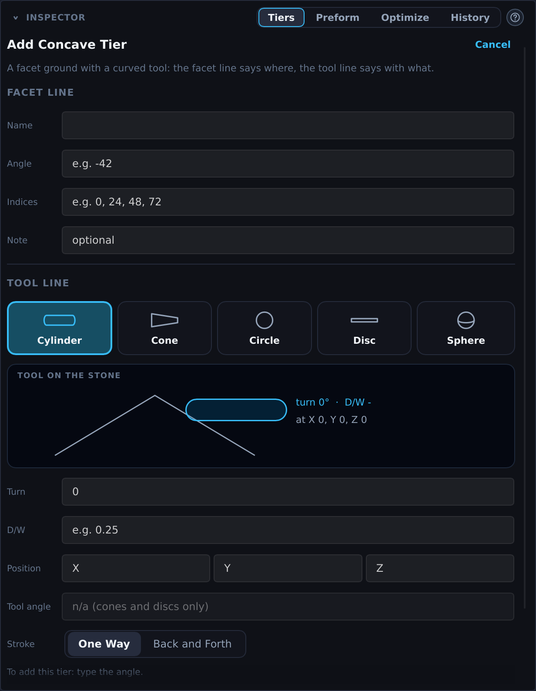
8Preforms, the optimizer and angle sweeps
pleochroma-cut-core's preform module models the
rough gem material as a rectangular block or a round/oval cylinder. Its
yield_metrics module reports volumetric yield, an estimated
carat weight from the material's specific gravity, and flags a design whose
facets cut outside the stated rough. In the inspector's Preform tab, the
half-width (1 to 3), the length/width (1 to 2.5), the depth (1 to 3.5) and
the girdle Y-offset (plus and minus half the depth, in millimetres, once a
girdle diameter is set) each have a slider. A slider only fills its field;
nothing changes in the design until you click Apply Preform.
Manufacturability checks (manufacturability/) run on each
solve. They report vanishing facets that fail to form a real face and facets
too small to cut reliably; these two need a closed solid. They also report
an index that does not land on a gear tooth, a meet that names a tier cut
later, and a meet name that would not survive an .asc round
trip. The warnings go stale at the next edit and come back at the next
solve. Designs with concave tiers get a sixth check
(section 7).
A tier's constraint can also be authored as a real-world target rather
than a dimensionless mast: cut to a stated depth in millimetres, or
bisect the tier's mast until the design's measured girdle thickness (read at the girdle line, its thinnest point) or
table width lands on a stated millimetre figure
(TierTarget::DepthMm/GirdleThicknessMm/
TableWidthMm, pleochroma-cut-core/src/design/targets.rs).
Every tier also keeps a stable id (tier_id) that survives
reordering, duplication, and a save/reopen round trip through
the native .psdd design file, so a manufacturability
warning or an authored target keeps pointing at the same tier across
edits rather than a table row position.
The optimizer
The Optimize tab runs a coordinate search over the angles of the tiers it may move, followed by a deterministic simplex pass (Polish) that can follow a ridge where two angles must move together. It looks for a few different good designs, ranks them and shows each next to the design you started with. Nothing changes until you click Apply.
Every candidate keeps the stone’s meets. Before it searches, the optimizer records the stone’s facet network: each meet (a point where three or more facets come together) and the edges and faces between them. A proposed angle is then corrected so that no meet splits into several points, no facet or edge disappears, and the girdle’s outline and height stay as they are. A proposal that cannot be corrected is dropped before its optics are scored. Retarget (section 5) works the same way, with tighter limits on how far the shape may drift. For Retarget the limits on the stone's depth, the girdle height and the movement of the meets grow with how far the change turns the facets, so a large step between distant materials is not refused for that alone; the meets, the girdle thickness, the table and the aspect are not relaxed. The line above the candidate list reports how many original meets were preserved. A design imported from an older GemCad file, whose depths are written with five decimals, has meets that already miss by a few millionths of the stone; the check recognises them as meets, records that miss and asks no candidate to close it, so such designs are optimized and retargeted like any other. A design with concave tiers is handled the same way: the check covers its flat facets, no run edits a tool, and the optical figures and the yield are measured on the stone with its tools.
A coordinate search walks downhill and can settle in a good but not the best arrangement, so the desktop optimizer tries several starting points. It first screens a spread of trial arrangements, keeps the best ones that differ clearly from each other and runs the search from each, sharing the budget between them. Your own design is always the first start, so the result is never worse than a single search from it. The starts run side by side on the processor cores, and the answer does not depend on how many cores there are. The status line shows the start in progress and the best score so far, and the result names the start that won. With Starts at 1 the search is the plain single descent; the web app always runs one start. By default the search scores under the Grading tray, the evenly lit hemisphere with a head shadow, so brilliance counts every lit direction; under a Studio rig, brilliance is measured against that rig's own lamps and a small note says so.
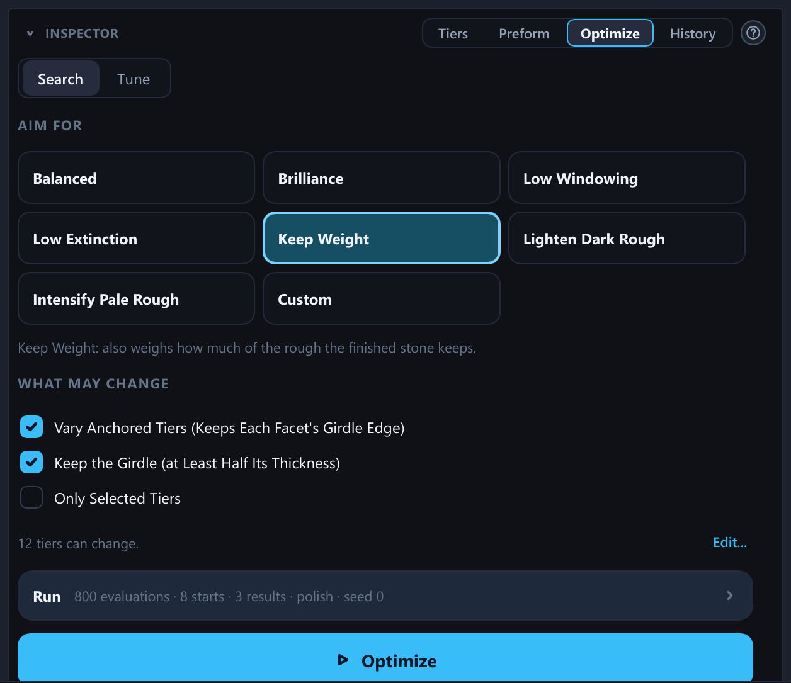
- Aim For. Seven presets set the weights of windowing, extinction, tilt brilliance, yield and tone: Balanced (1, 1, 1), Brilliance (tilt brilliance 4), Low Windowing (windowing 4), Low Extinction (extinction 4), Keep Weight (yield 3), and the two tone goals below. Custom shows the weight fields, the Yield weight slider (0 to 3) and the Tone slider (−3 to 3).
- Tone goals. Lighten Dark Rough looks for the angles that return the lightest face-up color (higher L*), for rough so dark that the stone looks black. Intensify Pale Rough looks for the strongest color (higher C*), for pale material such as aquamarine. The face-up tone is the color of the light that comes back out of the table, worked out from the body color in Design settings and the light path through it, under the lighting the Live Render shows when you press Optimize. Set the girdle diameter so the color is sized as in the Live Render. The candidate list gains a Tone column (a dot in the predicted color and L*), the picked candidate shows before and after swatches, and green marks the figure the chosen goal pulls on. A material with no body color gives the goal nothing to do, and a line under the objective says so. The tone is measured table-up only.
- What may change. A tier pinned to an exact scale value stays put unless Vary Anchored Tiers is ticked. Then the search may turn it about the edge where it meets the girdle, so the girdle outline stays; the tick starts on when every tier is pinned, which is true of every freshly imported design. Keep the Girdle, on by default, discards a candidate whose girdle would be thinner than half the original or that loses the table. Only Selected Tiers limits the search to the selection. A candidate is also rejected if it breaks the closed solid or adds a vanishing or undersized facet.
- Never moved. A tier whose angle follows a relation goes along with the tier it follows. A horizontal tier (table, culet) and a vertical one (girdle) are never moved.
- Angle ranges. Each movable tier may change by 5° either way, never past 0.5° or 89.5°. The Angle ranges table lets you type your own minimum and maximum for each tier.
- Run. The budget is 800 evaluations by default and at most 100 000. Starts is the number of different starting arrangements, 1 to 32, 8 by default. The seed is 0 by default, and the same seed on the same design gives the same result. Candidates run from 1 to 5, 3 by default. An estimated time is shown and replaced by the speed of your last run. Cancel stops the search within about one evaluation and keeps the best partial result, marked as partial.
The candidate list starts with a Start row, the design as it is. Each candidate shows its score (lower is better), windowing, brilliance, extinction, yield and how many tiers it changes. A figure is green when it beats the start and red when it is worse, and each candidate differs from the others by at least half a degree on some tier. Picking a row shows that candidate as a ghost in the viewport without touching the design. Apply commits it as one undo step, including the followers of any tier it moves, and is refused when the design has changed since the run.
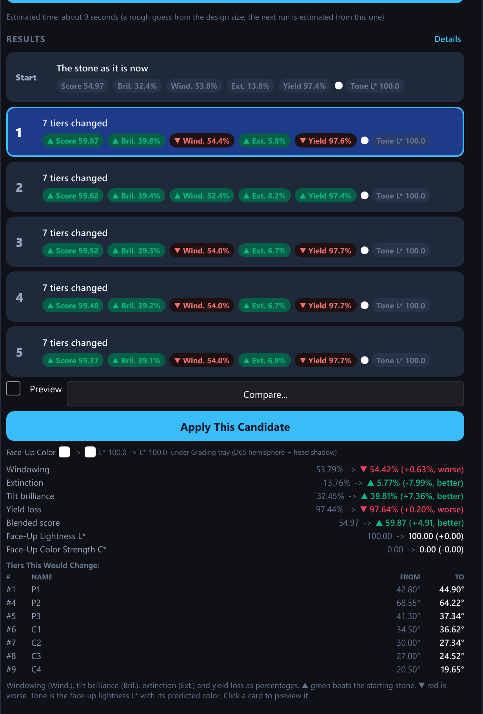
Tune
The Optimize tab has two pills, Search | Tune. Search is the automatic optimizer above. Tune is its hand-driven partner: it lists the tiers in the order a cutter works, the pavilion main first, then the crown main, then the rest, and keeps the vs Baseline figures in front of you while you move each angle. Pick a tier, nudge its angle by −0.5, −0.1, +0.1 or +0.5 degrees or type one (each is one undo step), and watch which figures change beyond their noise threshold. Accept keeps the design as a trial and ticks the tier, Revert This Tier puts the tier back to its Baseline angle, and Next Tier moves on. In the Advanced interface a small chart sweeps the selected tier about two degrees either side of its angle, marks the current angle and the best one, shades the plateau and sets an angle when clicked; Jump to Best goes to the best one, and Pair With... opens the two-tier sweep for the tier and a partner.
Angle sweeps
Edit → Angle Sweep... tries one tier's angle over a range and shows how the stone's figures change. You choose the tier, a From angle, a To angle and a Step; the fields take arithmetic. A sweep tries at most 200 angles, and the design's own angle is always one of them, marked Current. Every angle is tried on a private copy of the design, so a sweep never changes the design while it runs. The table lists brilliance, windowing, extinction, fire, scintillation and yield for each angle, scored table-up in the design's material under the Grading tray lighting, with the best figure of each column in bold green. An angle that gives no stone still gets a row, marked Not valid, with the reason. A tick box adds the tilt averages, which costs about a second and a half per angle.
A chart draws one line per figure, each scaled to its own lowest and highest value, so lines compare by shape and not by height; Contrast is drawn as a dashed line. Use This Angle sets the tier's angle in one undo step, and Copy CSV and Save CSV... export the rows. A table, a culet, a girdle tier and a tier that follows a relation cannot be swept. On a design with concave tiers the figures, and the tilt averages when ticked, are measured on the stone with its tools.
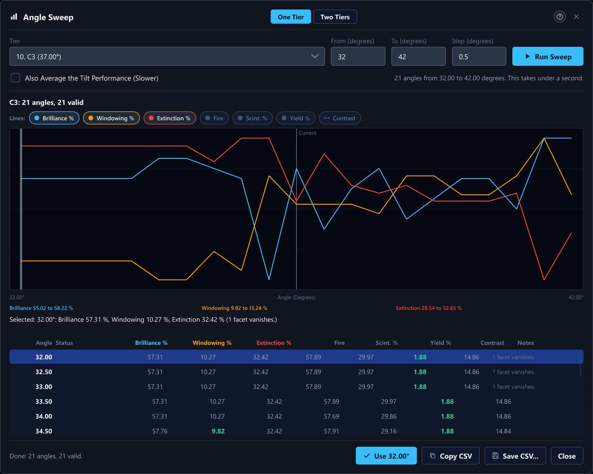
Two-tier sweeps
The dialog's One Tier | Two Tiers pills switch to a mode that sweeps two tiers together, for example the crown main against the pavilion main, because the best angle of one often depends on the other. Each tier has its own From, To and Step, and a grid holds at most 900 angle pairs. The result is a heat map: one colored cell for each pair, bright for the best values of the figure you choose, a ring on the design's own pair, a star on the best pair, and hatching where a pair gives no stone. Outline the Best Cells draws the plateau, the pairs that are as good as the best one within the figure's noise threshold. Click a pair, or use the arrow keys, to read its figures and their change from the design's own pair. Use These Angles sets both tiers in one undo step, and Refine Around This starts a finer grid around the selected pair. The tilt averages can be added; above 100 pairs the dialog asks first.
Baseline and the compare window
The Baseline is the copy of the design that every later change is read against. It is set when a design opens and after an Optimize or a Retarget is applied, and Set Baseline keeps the design as it is now, with its solved masts, in memory for the session. The vs Baseline card of the Edit view shows the design's figures (brilliance, windowing, extinction, fire, scintillation, yield and the warnings) with their signed change since the Baseline, scored face-up under the Grading tray. A change is green when it is better than the figure's noise threshold, red when worse and grey when it is within the threshold, which most small nudges are. The card says Out of Date when the design has not been solved since the change, and Measure Tilt adds the tilt averages. These figures describe the stone itself; the numbers in the Live Render corner describe this view under this light, so the two brilliance numbers differ. Compare to Baseline lists each tier as Same, Changed, Added or Removed. The compare window shows two stones side by side, or behind a split slider, in the solid view or path-traced, turned together. Retarget, Optimize, the Baseline comparison and a pair of variants all open it. Opened from the Optimize tab, its header has a Compare Against list: Current design (the default) or Original (before retarget), offered once a Retarget has been applied, so an optimized, retargeted stone can be judged against the stone you started with.
Under the stones, a table gives brilliance, windowing, extinction, fire and scintillation for both sides, measured table-up, each side in its own material, under the lighting selected in the viewport when you opened the window. For each figure it shows the value before, the value after, the change and one word: better, worse or same. A change smaller than a threshold reads as about the same: 2 points for brilliance, windowing and extinction, 3 for scintillation, and for fire 5 % of the before value but at least half an index point (the same thresholds color the vs Baseline card). A few sentences put the result in words, from the most important change to the least (“The after design is brighter face-up (+4 %) and shows less windowing (-3 %).”), or say “No clear optical difference.” One button adds the average over four directions and 181 tilt angles for both stones, with a threshold of 1 point. Keep After applies the change exactly as the dialog's own Apply does. The table also has a Contrast row and a Zones (ASET-style) row: a bar before and a bar after, each split into the Red, Green, Blue and Dark shares of the face, and the points that moved. Zones have no better or worse. The window opens at the top at small window sizes.
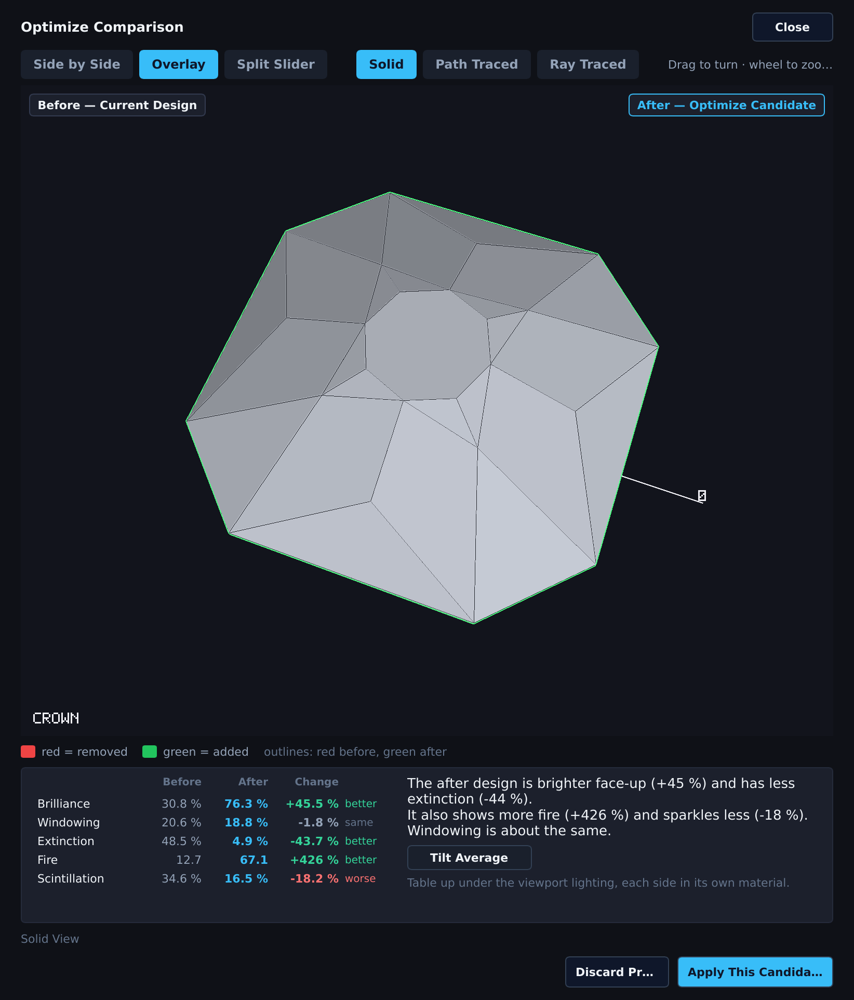
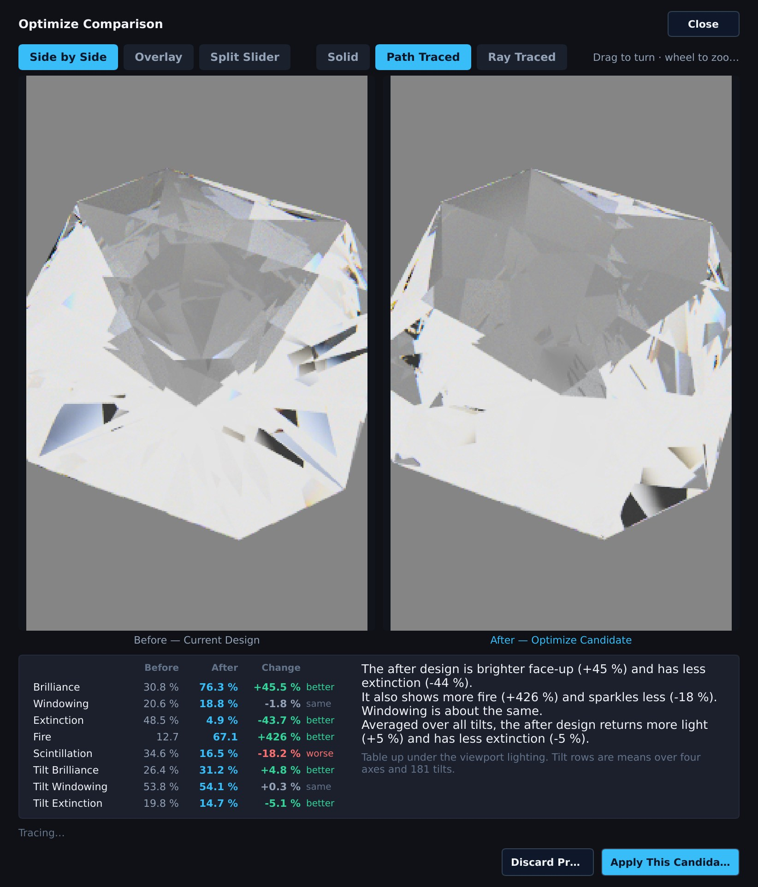
9History and variants
The inspector's History tab has three views, in this order. Steps lists every change made to the open design, newest first, each with a small picture of the design at that step. Trials lists the states you tried while tuning, with their figures, for the session. Variants lists named copies of the design that you chose to keep.
Steps
A click on a row goes to that step in one move, instead of pressing Undo many times. The design is put back as it was, and the tier table and the solid view update at once. The solved values stay out of date until the next solve, as after Undo. A jump is not an edit: it adds nothing to the history, and the steps you went past stay in the list marked “undone”, so you can go forward again. If you make a new change after going back, the steps after the one you stood at are dropped, which is the rule after Undo too.
A row shows what the step did, in the words of the Undo button's hover text, its number, and a mark on the current step. Several quick nudges of one angle count as one step. The pictures are drawn in the background, only for the rows in view, from one fixed angle in the flat-shaded solid view. A step whose design does not solve shows “Does not solve” instead of a picture, and the pictures of a concave design show the cuts of its tools. The list is one Tab stop with Up, Down, Home, End and Enter. The history starts again at New, Open and Load, and it is not saved with the design file.
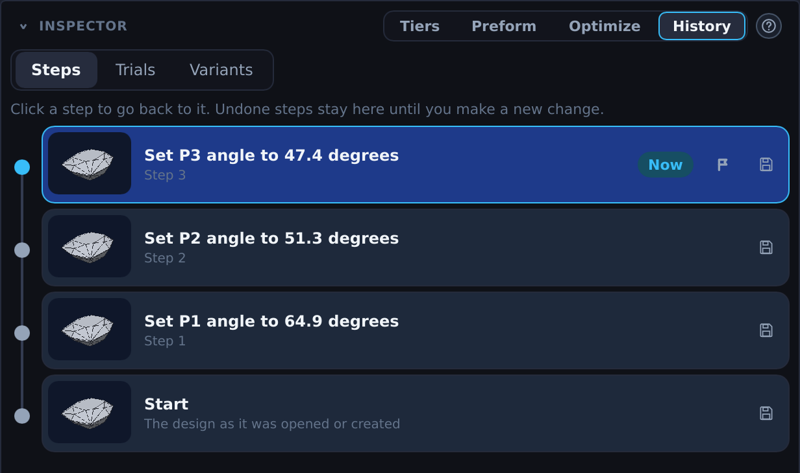
Trials
Trials, the third view, is a numbered list of the states you tried while tuning, each with its figures: brilliance, windowing, extinction, fire, yield and the number of warnings, scored under the Grading tray like the vs Baseline card. Keep as Trial (or Ctrl+Shift+K) keeps the design as it is now. Use This Angle and Use These Angles in the angle sweep, applying an Optimize candidate or a Retarget, and Accept in Tune add a trial by themselves, and the design as it was just before an Optimize or a Retarget is kept as Before Optimize or Before Retarget. Record Every Change, off by default, adds a trial for every change, at most one a second. Undo and Redo never add one.
The table colors each figure against the Baseline, green better, red worse and grey within the noise threshold, and outlines the best figure of each column. A click on a row shows that trial on the stone. Restore brings the design back as one undo step; Compare to Current opens the compare window; Set as Baseline, Save as Variant..., Delete, a Star and a note are on each row, and Re-score Trials scores trials made in another material. Trials live only for the session: they are gone when the design closes, so save one as a variant to keep it.
Variants
A variant is a named copy of the whole design: the cutting instructions, the rough, the girdle size, the material, the relations and the concave tiers. It does not keep the lighting, the undo history or attached files. You can save one from the Variants view (the design as it is now), from the small save button on a row of the Steps view in the Advanced interface (the design as it was at that step) or from the command palette. A variant has a name and an optional note.
Variants are kept in the library under the design's id and not in the design file, so a design file you send to someone does not carry them. A new design that has never been saved gets a new id each time it opens, so save it once before relying on its variants.
Open on a variant makes the open design that variant, as one undo step. One Undo restores the earlier design, including its rough, material, relations and concave tiers. Each row also has a ... menu with Rename, Note and Delete. A variant remembers the variant it came from (“from: Variant 2”), so a run of saves reads as a chain, and opening an earlier variant and saving again starts a second branch; this is remembered only while the design stays open. Compare two designs takes any two entries from the current design and the variants. It shows them as pictures in the compare window or, in the Advanced interface, as the cutting instructions line by line with added and removed lines marked.
Limits: variants stay on this computer, a variant cannot be edited in place (open it, change the design and save a new one), and the list has no search or filter.
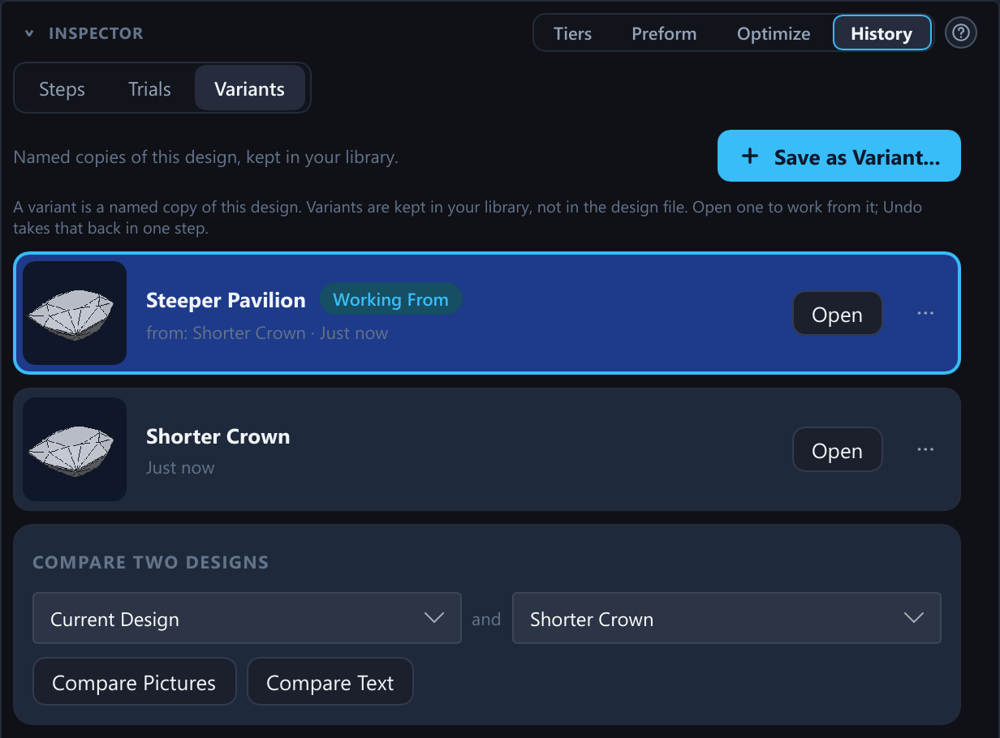
10Cutting mode
Edit → Cutting Mode..., the Cut Mode button on the command bar, Start Cut Mode on the Cutting Instructions page, or the command palette opens the cutting instructions made for the bench: one step per page, in the order of the cutting sheet, in type large enough to read from the lap. The design must be open and solved. A step shows:
- its number (“Step 4 of 12”), the side of the stone and the tier's name;
- the angle, in very large figures;
- one chip for each index;
- the instruction, in the words of the cutting sheet (“Meet P1, P2”, or “Cut to depth 2.81 mm.” when no corner of the stone cut so far is there to meet), and the depth in millimetres with the mast reading when the step has one;
- a cheater offset, the tool values of a concave tier and your note, when there are any.
Under the header a step strip has one cell for each step, green when done, amber when changed since it was marked and grey when still to cut, with a color stripe for its stage (pavilion, girdle or crown); click a cell to jump to that step. A Cut To card shows where the stone stands, and a preview shows the next step.
Beside the step are two pictures: the stone after this step, which is the solid view with the Cut slider set to the step and this tier's facets highlighted, and an index wheel with the step's indices marked as dots.
Left and Right (or Page Up and Page Down) move between steps and mark nothing. Space or D marks the step done and goes on, as does the Mark Step Done button, which is named after the step (“P3 Done · Next”), and Esc closes the screen. You can also tick single index chips, for a step with many indices that you cut over several sittings. The two kinds of mark follow each other: ticking the last chip marks the step done, and taking the done mark back clears its ticks. The progress bar counts the steps marked done. Cutting mode follows the order of the cutting sheet and does not check that you cut the steps in order.
The marks are kept in the library on your computer, under the design's id, and not in the design file. They are written as soon as you make them, and sending a design file never carries them. A mark stores a fingerprint of the step's cutting values: side, angle, indices, depth or mast, cheater offset and, for a concave tier, the tool values. If you change the step afterwards, the page shows a Changed since you marked it badge and the step stops counting as done until you cut it as it now reads and mark it again. Renaming a tier or editing its note does not change the fingerprint. Reset Progress removes every mark of the open design, after a question.
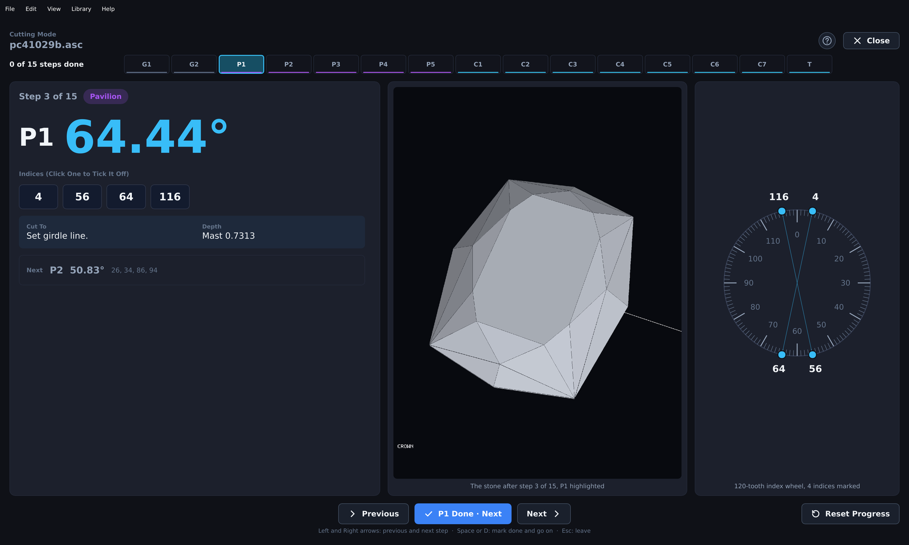
11Rough planner
Library → Plan Rough... answers a question the preform's single-design yield figure cannot: given a piece of rough and the designs in the library, what is the heaviest set of stones that can be cut out of it? The planner opens in its own window, not a modal dialog, so you can keep browsing the library, click designs and move it to a second screen; closing it only hides it, and the model and results are there when you open it again. A plan that is running keeps running.
The window has a header and three columns. The header sums up the rough (material, shape, size, weight and number of cuts) and holds New Rough, undo, redo and help. The left column leads through four steps, Rough, Crystal Axis (only for a material with a crystal axis), Shape Cuts and Plan Settings, as cards of which one is open at a time. A step turns its number into a green check once it is complete; folded, it shows a one-line summary, or a red dot and the error when something in it is wrong, so no problem hides behind a folded step. The Plan button (Ctrl+Enter) stays pinned under the steps and, while it plans, shows the progress and the best result so far. The centre column is the 3D view, and the right column has two tabs, Layouts for the ranked results and Saved Plans.
In the Rough step you model the rough: a block (Rough X, Rough Y and Rough Z in millimetres), a cylinder (diameter, length and axis), a water-worn pebble (the ellipsoid inscribed in a box) or a 3D scan imported from an OBJ, STL or PLY file, each picked from its tile. The Shape Cuts step takes flat cuts off it — an edge cut or a corner cut on a block, or a face cut in any direction on any shape. Cuts can be typed in as setbacks and angles, or made by clicking an edge, a corner or a face in the 3D view, with undo and redo for every step. Only materials with a known specific gravity are offered, because the specific gravity turns volume into carats. The Carat field holds the model's own weight, and the chip under it shows the model's volume and weight. Type the weight you measured on a scale over the model's carat, and the chip compares the two: green within 5 %, amber up to 15 %, red beyond. Fit to Weight then scales the whole model to the weight you typed.
The Crystal Axis step starts as Unknown, and the planner then plans as usual. Known gives a Tilt and a Turn in the rough’s own frame, which you can type, take from the Find the Axis menu or set by dragging the axis line in the 3D view. With the axis known, the planner orients the stones to the material’s usual rule (see the crystal axis page).
A non-convex rough from a 3D scan. The 3D Scan tile imports a scanned or irregular rough as OBJ, STL (ASCII or binary) or PLY (ASCII or binary). The file is read in the background, and a file larger than 64 MiB is refused before any of it is read. Its numbers are read in millimetres by default; File units in the scan card (mm, cm, m, inch or micrometres) changes the unit after the import, and the planner then reads the same file again. A mesh that is less than 1 mm or more than 2000 mm across in the chosen unit is refused with a suggested unit, which the planner never applies by itself. If the mesh is closed, the planner uses the mesh itself and not only its convex outline: no planned stone reaches into air at a notch or a hollow, and the volume, the weight check, Fit to Weight, the yield and every fill percentage use the volume of the material. A hollow rough, written as an outer surface plus one more closed surface for each cavity, has the cavity volumes taken out whichever way they are wound. Small scan defects are repaired first: hair-wide gaps are joined, faces turned the wrong way are turned back, and holes whose edge loop is up to 5 % of the bounding-box diagonal long (at most 64 edges) are filled. If the file cannot be used as a closed mesh (no faces, an open or non-manifold surface, a surface that crosses itself, no volume, or more than 200,000 triangles), the import falls back to the convex hull of its vertices; a smooth scan, whose outline is too fine to stand in for it, is refused instead and has to be repaired or decimated first. Only face cuts apply to a scan.
The import report under the scan card says whether the planner works with the scan itself or with its convex outline, or that the file is refused, and lists the findings: the repairs, the places where the mesh crosses itself, the outline of a smooth scan and the weight against the scale. A finding with a place has a Show link that turns the view to it. In the 3D view the Problems layer colors repaired triangles amber and crossings red, and Outline draws the outline the planner uses as a cyan ghost. A smooth scan is planned from the scan itself: a simplified outline of at most 64 planes only sizes the grid, every stone is checked against the scan, and the plan uses every processor core. A scan is planned on a coarser grid than a modelled rough and stops at the Scan Plan Time Limit in Plan Settings (120 s by default, 0 for none); a stopped plan shows the best layouts found so far under an amber “Stopped at the time limit” badge, and Plan Again with More Time doubles the limit and plans again. Saved plans keep the mesh, and older plans still open.
Inclusions. The Inclusions row at the end of the Rough step adds inclusions, closed shapes inside the rough such as a crack, a feather or a crystal of another mineral. Every rough takes them. On a block, a cylinder or a pebble an inclusion is a mesh file or a sphere, ellipsoid or box of a typed size, placed by its centre in millimetres from the rough's corner; on a 3D scan it is a closed mesh (OBJ, STL or PLY) in the same coordinates and unit as the scan's file. Stones keep clear of an inclusion with a margin of 0.3 mm by default, while the weight, Fit to Weight and the yield count it as material, because it is stone you hold. An inclusion that reaches the surface is refused (model it as a notch instead).
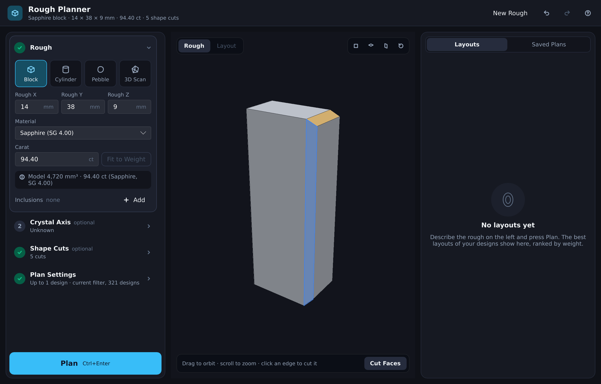
The Plan Settings step says what the planner may use and how much it must leave. Designs, up to (1 to 99, 1 by default) sets how many different designs one layout may mix, and Stones, up to (0 to 99) how many stones it may hold in all. With the stone limit at 0, the default, the planner fits as many stones as weigh the most; with a limit it searches for the heaviest layouts of at most that many stones. The Candidate designs switch chooses between Filter, the designs the library's search and filters currently show (the default), and Library, the whole library, each with its count. A single design can be excluded from planning — a plain cube that keeps winning, say — with Exclude from Planner in the menu of its design card in a layout or in the library's context menu; it stays in the library and is only left out of the candidates. A line under the switch counts the excluded designs; its Show link lists them, each with Restore. The Losses line sums up the loss settings, which default to 0.30 mm saw kerf, 0.20 mm allowance per side of each stone, 0 mm rough skin and a 1.00 mm minimum stone width; Edit unfolds their fields. Plan is greyed out, with the reason under it, while it cannot run; while a plan runs, the Plan area shows its stage, a progress bar and Cancel. The planner returns up to 10 layouts, heaviest first.
A design's finished size (footprint, height, volume and convex outline) is measured once by solving its facets, then stored in the library database, so only the first run over a large library is slow; the measurement is repeated automatically when a design's geometry changes. Designs without a usable design file — catalogue entries known only by an angle table, or schedules that rely on the preform to close the stone — are skipped and counted in the (i) note of the Layouts tab. A design's concave tiers (section 7) are honoured in the volume, the carat weight and the yield, and the 3D view draws the tool cuts. The fit uses the carved outline: a tool that removes a vertex of the outline lets the stone sit tighter, while grooves and dimples inside the outline change nothing. A design whose concave tiers cannot be resolved is skipped and counted; it is never planned as a flat stone.
Two kinds of layout are ranked together. A single stone is fitted exactly: the planner uses the design's real outline, turns it freely in every direction and scales it to a very good fit inside the rough, so the table can end up tilted against every rough face. Several stones use the box model: the rough is sawn edge to edge in three stages (slabs, then bars, then pieces, with the kerf lost at every cut; the planner tries all 6 orders of the three axes), and each piece holds one stone treated as the smallest box around it, so a round stone is treated as needing a square footprint. Stones of different designs can be mixed. The cut plan of a sawn layout is written as sawing instructions, and each piece names the design cut from it, which rough face its table faces, and the finished size and weight; an exact single stone is not sawn and has no saw stages.
The 3D view shows the rough you are modelling or the selected layout, switched with Rough | Layout at its top left; Front, Top, Side and Reset at the top right turn it to the front, the top, the right side or the starting view. In the rough view the bar along the bottom holds a hint and Cut Faces, which tints the faces of your cuts. In a layout the stones are drawn as their real designs, each design in its own color, inside the rough (faint glass) and the saw pieces (amber outlines); the bar then holds the design legend and the Rough, Saw and Stones switches for the three layers. Hovering shows a tooltip: in the rough view the edge, corner or face you could cut, in a layout a stone’s design, weight, size and place in the saw plan. Clicking a stone selects its design card.
The Layouts tab ranks the layouts under a summary line such as “10 layouts from 318 designs -- 7.2 s”, with an amber Unsaved badge while they have not been saved (planning again then asks first). Each row shows a star for saving, the rank, the total weight in carats with a bar against the best layout, the number of stones, the yield and a dot in each design's color. Clicking a row shows the layout in the view and opens the row into a card: one design card for each design (“17 × 02.112 Mixed Brilliant Oval”, the weight of its stones, the largest stone's size and a menu), then the yield, the stones, the saw cuts with the kerf loss and, when you typed a weighed carat, its share of the weighed rough. All figures lists each design's metrics: its share of the layout's weight, its finished size and proportions, its volume, how the table is oriented in the rough, how much of its piece it fills, and its brilliance, extinction and windowing from the tilt curves already stored for the design. Cut Plan folds out the sawing instructions, and Open in Editor opens the layout's first design in the editor with the piece of rough its stone comes from as the design's preform.
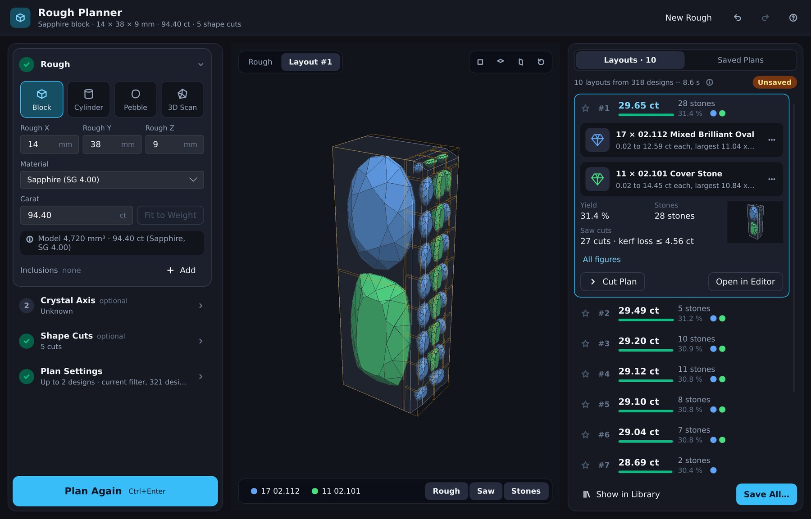
A design's name in a layout is a link into the library.
Show in Library in a design card's menu narrows the library list to
the designs of that layout, and Show in Library at the foot of the
Layouts tab to the designs of all of them. Star the layouts you want to keep;
the button at the foot of the tab (Ctrl+S, Save N Starred... with the number of
stars) saves them in the
library database, or every layout while none is starred (Save
All...). The Saved Plans tab lists the saved plans, each with a
menu to open, rename, export or delete it; an export is a
plain-text .psrd file, which Import... reads again, for
example on another machine. When a saved plan is opened, every design is
checked against the library, and the plan says which designs were deleted,
changed since, or found again by title.
The results are an estimate after your kerf and allowance; real yield also depends on inclusions you have not modelled and on how closely you follow the plan. The planner keeps stones out of the inclusions you add, but knows nothing of the others, and assumes stones that come out exactly to their design's proportions; a cylinder and a pebble are approximated by polyhedra slightly inside the true shape, and around the notches of a mesh it checks stones rather than optimising them. It works with the local library only; if a remote catalogue is selected, the window asks you to switch back. Use the ranking to compare options, and do the final marking-up on the rough itself.
Sources: crates/pleochroma-cut-core/src/rough_plan/,
apps/pleochroma-cut/src/gui/rough_plan/, and the manual chapter
apps/pleochroma-cut/docs/manual/15-planning-a-rough.md.
Importing a scanned or irregular rough as an OBJ, STL or PLY mesh works,
and stones keep clear of the inclusions you add to it.
12Solid inspection view
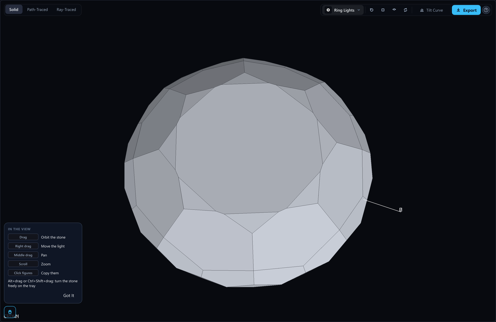
The Edit tab's second viewport shows the exact polyhedral solid (facet edges and vertices, not a tessellated approximation), flat-shaded, and it updates after almost every edit, not only after Solve. The mode segment at the top left chooses what it shows: Solid, Path-Traced (the Live Render picture), Ray-Traced and Diagram (a flat faceting diagram with crown, pavilion and profile panels, ringed by the index wheel). Keep Solid selected and click a tracer to draw the solid's facet edges over its picture. Hover over a facet to read its tier, angle, index position, block and margin over the critical angle. Click a facet to select its whole tier in the tier list; click a row and its facets tint in the viewport. When an edit has not solved yet, the viewport keeps the last solved solid on screen under a banner. When a design does not solve at all, the last solid that closed is shown dimmed and the banner names the problem and holds its fix. The solid diagram in the viewports and in Compare uses high-contrast colors. A closed solid reads, for example, “Closed solid · volume 2.1879 (model units³)” in the status.
The view toolbar floats over the picture. At the top right are the camera icons Front, Top, Bottom, Left, Right, Fit and Reset; Fit keeps the angle and changes only the distance so that the whole stone fits, and Reset puts the camera angle, distance and light back and centres the stone. The Show group has toggles for Preform, Snap, Crystal Axis, Surface Finish and Slice, and folds into one Show menu in a narrow window. In the Diagram view the camera icons give way to Reset View, Crown, Pavilion and Profile. A mouse button at the bottom left opens the gestures card, and a hint strip under the toolbar says what the pointer will do.
The Cut slider
The slider in the viewport toolbar shows the stone being cut. All the way left is the Rough. Each step to the right adds one tier, and the label names it (After P1 (3 of 9)). All the way right is Finished, where it starts whenever you open or create a design. Every position is a whole, closed stone that you can orbit and pick, and the facets of tiers not yet cut are not on it. Without concave tiers, the steps follow the order of the cutting instructions. With concave tiers, they follow the order in which the stone is cut: the pavilion and girdle facets, the concave pavilion tiers, the crown facets (the table excepted), the concave crown tiers and last the table.
The slider's border turns amber while the stone is cut back. The Live Render picture and the Optimize and Retarget previews follow the slider, and Live Render shows a badge with a Show Finished button. The Diagram always shows the finished design. Exports, the tilt video, the tilt curves and the hover pictures always draw the finished gem (section 13).
Handles and Slice
A selected, solved tier shows three handles on its facet. A tilts the tier, D moves it along its normal, which pins its mast (the toast says what it met before), and I turns it around the index wheel by whole teeth. Each handle moves the whole tier, every facet of its symmetric orbit, and the tiers that meet it by name follow. An angle snaps to 0.1° and a mast to 0.01. Shift gives fine steps and the Snap toggle in the Show group turns the snapping off. One drag is one undo step, and Esc during a drag puts the design back. The Diagram view has the same handles on its flat panels. A tier whose angle follows a relation has no angle handle. The Larger Handles preference (section 16) makes the handles about 60 % bigger for touch screens and pens.
Slice (a Show toggle) starts a new tier by drawing on the stone. Drag a line across the solid view and the part to the right of your drag direction is removed; Flip reverses it. The plane is snapped to the nearest index and an angle rounded to 0.1°, and the provisional tier appears with a green outline. Drag its depth handle inward to cut it in, choose Symmetric for the whole orbit or a single index, then Keep to add the tier as one undo step or Discard. Slice needs the 3D stone and is not available in the Diagram view.
13Export
Export selects Path-Traced or Ray-Traced. Ray-Traced uses an Anti-Aliasing tap count and Fire instead of progressive samples, and has no denoising. Local CPU/GPU and remote peers on the same protocol (45) carry the chosen engine; a frozen job preserves it.
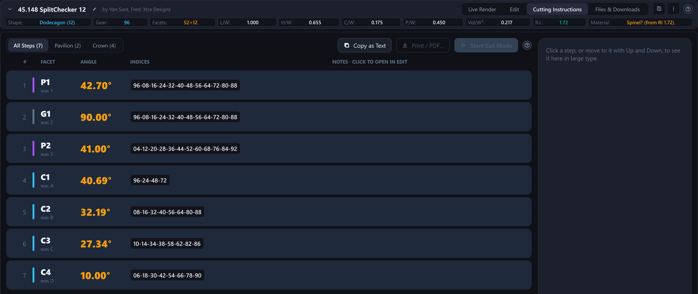
The Cutting Instructions page lists the selected design’s steps as cards, one per tier in cutting order: the step number, the facet code, the angle, the index positions and any note (a note is read-only here and opens the tier in Edit). A concave tier takes two lines, the facet and the tool line under it. The pills All Steps, Pavilion and Crown choose which cards show, and a filter box narrows them. A design catalogued with older labels shows the code with the original label beside it in small type (“was 3”), so a printed sheet that says 3 can still be matched. Copy as Text copies the list to the clipboard, Print / PDF... prints it and Start Cut Mode opens cutting mode. From 1000 px wide a side panel shows the selected step in large type with its index wheel. When the Edit view holds a design, the cards follow that design. The page replaces the Schedule tab of earlier versions.
The command bar's File menu holds the design's own exports next to New Design, Open and Save, among them three built from the solved schedule. Both cutting sheets follow the standard cutting-instructions template (below). Export Cutting Sheet (PDF) writes the template alone as a PDF ready to print: one US Letter page for a typical design, with the four views as line drawings, and a further page when the pavilion and crown lines do not fit. A design that does not close to a solid gets no PDF, since its drawings would be empty. Export Cutting Sheet (HTML) writes a self-contained page that prints like the PDF and adds an Additional information page: the four views as shaded renderings at print resolution, the orientation of the crystal axis, each tier's mast (in millimetres too once a girdle diameter is set, with any cheater offset) and the carat estimate. Export Diagram (PNG) is the facet drawing alone at print quality.
A concave tier prints on the cutting sheet as its two lines in one band
(section 7). The cutting sheet and the diagram export
refuse a design that does not solve (“Cannot build a cutting sheet:
...”). An image export always draws the finished gem,
whatever the Cut slider shows. When the slider has the design cut back, the
export first rebuilds the whole stone on the background solver, and when the
design does not solve it exports nothing and says “Nothing was
exported: the design does not solve” with the solver's reason
(apps/pleochroma-cut/src/gui/editor/finished_stone.rs).
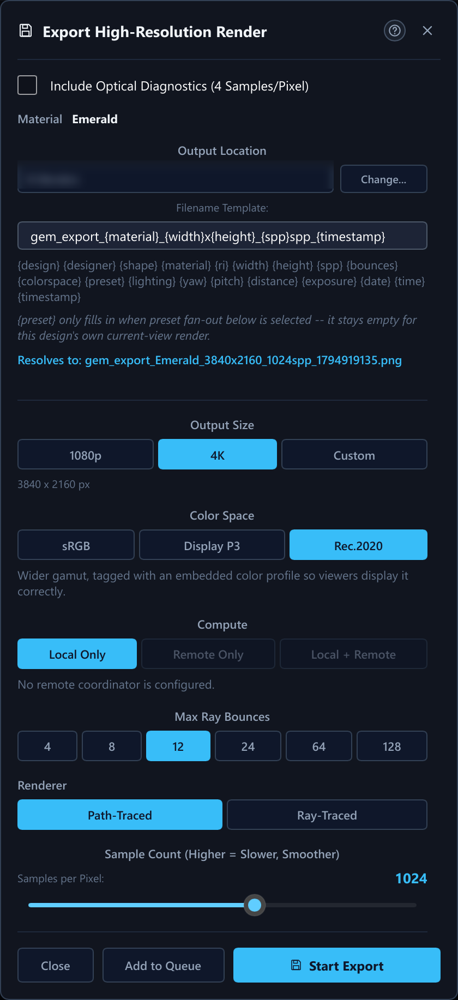
- Max resolution
- 8192 × 8192 px (
MAX_EXPORT_DIM) - Max samples
- 32 768 per pixel (
MAX_EXPORT_SPP) - Max bounces
- 128 (
MAX_EXPORT_BOUNCES) - Color spaces
- sRGB, Display P3, Rec. 2020 (Display P3/Rec. 2020 exports embed an ICC profile so they aren't misread as sRGB)
- File formats
- Read and write: GemCAD
.asc, the native.psdddesign file, 8-bit PNG renders. Read and import:.gemand.gcs. Write, experimental:.gcs. Cutting sheets: HTML and PDF. Details below.
Constants from apps/pleochroma-cut/src/bridge/export_thread/params.rs.
The master still is an 8-bit PNG. The export dialog can also render the stone under several saved views in one export (Also Render With These Presets), and an export can be added to the render queue instead of starting at once.
The cutting sheet
The sheet follows the standard cutting-instructions template, in the HTML page and the PDF alike. The header and three data blocks form a column on the left with the four drawings in a two-by-two grid beside it; the comments and the pavilion and crown lines run across the page below. A value with nothing to print reads “-” rather than a guess:
- Header. The title (or “Cutting instructions”),
an optional subtitle, then the designer and the month and year of the export
side by side. The title comes from the file details stored in the
.psddfile, falling back to the.ascheader lines. - Facet Data. Tiers and facets in the pavilion, girdle and crown, and the totals. A tier without an index list is one facet, otherwise one per index; a concave tier counts one per place the tool is used; the culet counts as a pavilion facet, and a crown with a table reads “32+1”.
- Size Data. L/W, H/W, V/W³, P/W, C/W and P/C to three decimals, the same figures as the status bar and the yield report. A dash means the design does not measure.
- Design Data. Five rows: the refractive-index range when the design gives one, else its own index with the material (a question mark means the material is a guess from the index); the size range, else the girdle diameter; the symmetry (“8-fold, mirror”); the index gear (“96 Index”); and the shape.
- Views. Four line drawings with each facet's code and the index wheel around the crown and the pavilion: down +Z (the crown from above), down +X (the profile), down −Y (the end) and down −Z (the pavilion from below). A facet too small for its code gets the code outside the stone on a thin leader line.
- Comments. The design's notes and its
.ascfootnotes. - Pavilion and Crown. One line per tier in cutting order, on alternating grey bands: code, angle, index list and instruction (“Meet P1, P2, G1”, see below). The girdle lines sit in the Pavilion part, and the Crown part ends with the table. The masts are in the HTML page's Additional information.
The order and the labels are the same everywhere in the app (the sheet,
Cutting mode, the Cut slider and a Build This Design lesson). Pavilion and
girdle tiers come first, then the crown, and the table is always last; a
concave tier is cut after the flat tiers of its side. A tier that meets a
facet cut later moves to just after the last facet it meets. Codes are
numbered separately for each letter in cutting order (P1, P2, … G1,
… C1, … T and Culet), angles are printed unsigned, and
positions are written with dashes and two digits (96-08-16-24
on a 96-tooth gear, where index 0 prints as the tooth count as the template
does, and 03.50 for a position between two teeth). The plain-text version
has the same blocks without the four drawings. The sheet always re-solves the
design fresh, because the masts it prints are what you set a mast gauge to.
Export Diagram (PNG) is one wide picture of the crown,
pavilion and profile panels, about 1800 × 720 pixels.
Meet points on the sheet
The meet column tells the cutter where to stop. “Meet P1, G1” means that when you cut this tier its facets reach a corner that is already on the stone, a point where facets of P1 and G1 meet: cut until the new facet just touches that corner, then stop. The sheet names only a corner that is there at that moment, on the stone cut so far, and never a corner that appears only once later tiers are cut. A facet counts as reaching a corner when it passes within 0.005 % of the stone’s size of it, which is loose enough for the five-decimal masts of older GemCAD files.
Some rows have no corner to cut to. The anchors fix a dimension of the stone instead: “Set stone size.” is the girdle that sets how large the stone is, “Cut to centerpoint.” the tier whose facets meet in one point on the axis, “Set girdle width.” the first crown tier (or the table, when there is no other), “Set table size.” a table on a crown with no corner for it to meet, and “Set girdle line.” the first pavilion tier of a design cut girdle first. You cut each one to the dimension you want, and the tiers after it meet the corners it makes. The first tier, and any tier cut while the stone has no corner yet, prints its depth (“Cut to depth 2.18 mm.”). So does a tier none of whose facets reaches a corner of the stone cut so far (“Cut to depth 2.81 mm.”): set its depth by measurement, with a depth stop or a mast reading, and expect the meets of the tiers after it to need a little adjusting by eye. Without a girdle diameter the row gives the mast reading instead (“Set to mast depth 0.6700”). The verdict names such tiers (section 5), and Snap to Meets gives them a corner to cut to.
Design file formats
- GemCAD
.asc: read and written, with CRLF line ends as GemCAD writes them. A relation is exported as its current angle and a concave tier as two footnotes in cutting order. The format has no field for frosting, so the geometry is written and a dialog says that the frosting is not part of the format. - Native
.psdd(crates/pleochroma-formats/src/native): a self-contained text file in TOML syntax with a versioned header. It keeps constraints, preforms, tier relations, concave tiers, frosted tiers and facets and a snapshot of a custom material, which a plain.asccannot hold. A file is written as version 2 only when it has concave tiers, as version 3 only when a tier has a relation and as version 4 only when its rough is a planned piece from the Rough planner, so every other file is unchanged and an older build refuses a version 3 or 4 file rather than dropping the relations or the rough. Frosting adds no version: a design without it writes the same file as before. It also carries descriptive metadata (title, designer, source, notes, tags, licence, dates, an id) and attachments that cannot be recomputed (a PDF, the original.gemor.asc, a diagram image); derived values such as ratios, volume, facet counts, the angle table, previews and tilt curves are recomputed on import. Variants, cutting marks and per-design lighting are not in the file (section 2). - Gem Cut Studio
.gcs: opens and imports, converted to.asccutting instructions, and a frosted tier or facet in the file stays frosted. The reader follows the file description in that program's 1.1 manual (pp. 58–61) and reads all 59 real files of its test corpus. Gem Cut Studio rescales its designs to fill its workspace, so the converted masts are about 0.9 of what GemCAD writes for the same design; the shape is identical. Anything the reader does not recognise is listed in the import summary. The writer is experimental: it follows the published description, writes the frosting back, has not been checked in Gem Cut Studio itself, and chiral designs are untested. - GemCAD
.gem: opens and imports, converted to.asccutting instructions. GemCAD's binary save format has no published specification; the geometry (every facet plane, tier, name and cutting note, plus gear, symmetry and refractive index) is decoded from the binary and verified against a corpus of 254 files. A CAM preform in the file is read but not converted, and the import summary says so.
Neither reader is affiliated with or endorsed by those tools' authors. The file-format table sets the formats side by side.
14Render jobs
Collect still pictures and tilt videos as render jobs, then let the program render them one after another while you keep working, or overnight. Add to Queue sits next to Start Export in the export dialog and next to Start Video Export in the tilt dialog; it saves a job and renders nothing yet, and the two buttons do not replace each other.
What a job keeps
A job keeps a frozen copy of everything it needs: the finished stone with its concave tools and any frosted tier or facet, the material and its color, the lighting (with Stone Shadow, Tray Reflection and the turn of an HDR map), the camera (with where the stone sits in the picture), the color zones of a zoned stone, the size, the engine, the samples or fixed AA taps and Fire, the Optical Diagnostics choice and the other export settings, so changing the design afterwards does not change what it renders. A job file written before frosting existed has no frosting and renders the stone polished. It does not freeze the remote worker: the address and certificates are read from Settings when the job runs, and a job whose remote is gone renders on this computer with a note. It does remember where to render (local only, local and remote, or remote only) and the transfer. With presets ticked under Also Render With These Presets, each picture is its own job. The file name is fixed when you add the job, and “ (2)” is added if the name is taken by then; a date or time in the template is the time of Add to Queue.
The Render Jobs window
Open it from File → Render Jobs... or from the Jobs button at the top of the main window, which appears while a job waits or runs (“Jobs: 3 waiting”, or “Rendering 2 of 5 · 42%” with a progress bar). A row shows the number, name, state (Queued, Running, Paused, Done, Failed, Cancelled), what it renders and its progress. The list is kept in the library, so it survives a restart, and closing the window does not stop a render.
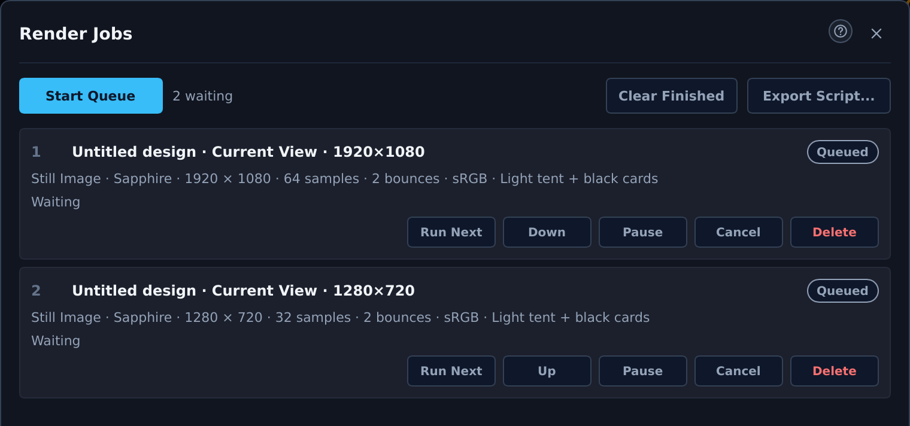
Start Queue renders the waiting jobs from the top down, one job at a time, and turns into Pause Queue. The queue never starts by itself, not even when the program starts, and it stops when the last waiting job is done. A row offers only the buttons that make sense for its state: Run Next (moves it to the top without interrupting the running job), Up and Down, Pause, Resume, Restart, Cancel, Show (opens the folder) and Delete. Clear Finished removes Done and Cancelled jobs. Delete and Clear Finished never delete pictures, videos or frames, only the list entry.
Pausing works frame by frame
A paused still starts again from the beginning when resumed. A paused tilt video keeps every finished frame and resumes at its first unfinished frame in the same folder; the video file is made once all frames exist, and the frames stay on disk (at large sizes, many gigabytes) until the job is finished or you delete the folder. Restart throws the frames away and starts at frame one. If you close the program while a job renders, it asks first and the job waits as Paused; after a crash or power cut the job is found as Paused with a note, and at most one frame is rendered twice. Only one job renders at a time, though a picture exported directly from the dialog can render alongside it, with both slower. An HDR map must stay where it was and unchanged until its job has rendered.
Exporting a script
Export Script... writes the unfinished jobs, in queue order,
to a new folder named render-jobs- with the date and time, so
nothing is overwritten. You choose PowerShell (.ps1), shell
(.sh) or both, whether to render on this computer or on this
computer and the remote worker, and whether the finished files go into the
script folder. The folder holds run-render-jobs.ps1 and
run-render-jobs.sh, a jobs/ folder with one job file
per job (and assets/ with any HDR maps) and, if chosen,
renders/. Copy it to the computer that should render and run
powershell -ExecutionPolicy Bypass -File run-render-jobs.ps1 or
sh run-render-jobs.sh. The script calls
pleochroma-cli once per job (set PLEOCHROMA_CLI to
its full path if it is not on the PATH), the engines, remote address and
certificate folder can be changed at the top of the script, and a tilt video
that stopped part way continues where it stopped.
Running a job file by hand
A job is a *.job.json file. pleochroma-cli render
FILE.job.json renders a still and pleochroma-cli tilt-video
FILE.job.json renders a tilt video; a file of the other kind is
refused. Both use the program's own render engine, so the picture is the one
the program would have made.
| Option | Meaning |
|---|---|
--engine path|ray | Override the frozen renderer; Ray-Traced jobs use format 2 and fixed AA taps without denoising. |
--stone-shadow on|off | Override Stone Shadow (render and tilt-video; studio lights with a backdrop only). A final shadow map is computed before the first sample. A still with the shadow is saved as a format 3 job, which an older program refuses. |
--tray-reflection PERCENT | Override Tray Reflection (render and tilt-video): the surface's reflectance straight on, 0 to 100 (0 is the matte tray, about 4 black acrylic, 100 a mirror). Studio lights with a backdrop only. A still with the reflection is saved as a format 4 job, with or without the shadow (a later format when the job also needs one). |
--local cpu|gpu|cpu+gpu | Engines of this computer; the default is cpu+gpu. Without GPU support in the build everything renders on the processor and a note says so. |
--remote HOST:PORT with --cert-dir FOLDER | Also use a remote worker; the two go together. |
--compute local|remote|both | Replace the job's own choice; remote and both need --remote. |
--transfer full|final, --contribute-local | Replace the transfer choice; with final, this computer renders a share too. |
--out FILE.png / --out-dir FOLDER | render only: another picture path. tilt-video only: another frame folder. |
--restart, --quiet | tilt-video only: start again from the first frame (a video resumes by default). No progress lines; notes and errors still print. |
--material NAME | Render the stone in another built-in material (any letter case) at the job's stone size. An unknown name is refused with the list of materials. |
--color-pattern NAME | Render the stone in one of its material's typical color patterns (hexagonal-banding, watermelon, ...), built on the material's own color as the Color Pattern window builds it. Not together with --color-variant. |
--color-variant KEY | Render the job's material in one of its built-in color variants (ruby.thai, or just thai) at the job's stone size. A tilt video then needs its own --out-dir. |
--highlights whiten|keep-color | How colors too bright for the screen are shown: dimmed with their hue and saturation kept (keep-color, the default) or paler (whiten, the rule of earlier versions). With a remote worker, whiten needs --transfer full. |
A job file is written in the lowest format that holds what it carries: format 2 for the Ray-Traced engine, 3 for Stone Shadow, 4 for Tray Reflection, 5 for the color zones of a stone, 6 for a turned HDR map, 7 for an off-centre camera and 8 for a posed stone (Stone Pose); a job that needs several is saved in the highest of them. A program that knows only an older format refuses the file. Export Script... and the command-line tool render a zoned stone with its zones. Remote rendering uses protocol 45, so update the app, the command-line tool, the coordinator, every worker and the Android app together; a worker on an older protocol is refused.
To connect Pleochroma Cut to a coordinator, open the Remote Coordinator dialog and use Connect with a Pairing Link: paste the link the coordinator shows, review it and pair. Afterwards Pleochroma Cut asks “Render on <computer>?” when its render settings would leave the new computer out. While the coordinator or a render computer is still building its shaders, Pleochroma Cut says “Preparing <computer>’s graphics card… 12 of 40”. See the distributed rendering page.
Standard output is one line, the path of the finished file (for a video the MP4
or GIF, or the frame folder when no video could be made); progress, notes and
wrote PATH go to standard error. Exit codes: 0 done, 1 wrong
command line or the other kind of job file, 2 a job file that cannot be used
(not a job file, a newer version, an invalid value, an HDR map that is missing
or changed, a frame folder that belongs to another job), 3 a file could not be
read or written, 5 the render failed or was stopped.
A render done only on the CPU, or only on the GPU of one computer, gives the same picture every time. One that splits its work between the CPU and the GPU, or uses a remote worker, is the same only statistically: the samples are shared by measured speed, so the noise differs a little between runs, and both pictures are equally correct.
15Tutorials and guided lessons
Help → Tutorials... opens the tutorial browser.
Tutorials are grouped in sections (Getting Started, Tiers, Solving,
Optimizing, Viewing, Output, Library, Preferences, and Built from the
Library for lessons made from a design), there is a search
box, every finished tutorial gets a Done mark, and a Reset Progress button
clears the marks. There are 96 short tutorials, each teaching one tool, from
adding a tier to angle sweeps, variants, concave tools, optical diagnostics,
cutting mode and the Rough planner
(crates/pleochroma-editor/src/guide/tutorials).
Two longer lessons sit beside them: the worked example, in which you build a
round-brilliant-style stone yourself, tier by tier, and an eight-step
welcome tour. A first-run dialog offers the tour, a start from a template,
or nothing.
Video tutorials are on the Pleochroma YouTube channel: https://www.youtube.com/@Pleochroma.
A small guide panel walks through the lesson. Each step lists numbered actions with the exact values to type, outlines the control it is about and says what to look for. A step is judged from the state of the design and not from the buttons you pressed, so any route to the goal counts: the tier form, an inline edit, Undo and Redo, or auto-solve finishing first. A step whose result leaves no trace in the design, such as a file exported or the Cut slider moved, is judged from the action itself. Controls the step does not need are dimmed, and their keyboard shortcuts do nothing, until the tutorial is closed. Back returns to the previous step, Skip Step moves on, and the cross closes the tutorial. Which tutorials you finished is kept in the program's settings and not in a design.
Build This Design
Any design in the library, local or remote, can become a tutorial that shows how to cut it from scratch. Use the steps button in the design header, Build This Design on the card's menu, Library → Selected Design or the command palette. The program reads the design, solves it to learn every depth, writes the lesson and starts it. The library design itself is not opened and is never changed; you build in a new design. The lesson has these steps:
- Start a new design with the original's gear, symmetry order and mirror setting and a preform shaped like its rough.
- One step for each tier, in cutting order, listing what to type into the tier form: angle, Meets, name and indices.
- A step of its own for the concave tiers, placed where the cutting sheet puts them.
- Solve and check; the step finishes when the result is a closed solid.
- Compare with the original. The lesson holds the original as the Baseline, and the step finishes when every tier is cut as in the original and every solved depth is within one percent of the original's.
The first tier of each block (girdle, pavilion, crown) states its depth with an exact scale value, because the solver needs one such tier in every block. For the other tiers, the program tries the lesson before it shows it: it types every tier through the tier form, solves the result, and uses named facets or an unspecified vertex only for a tier that lands within 0.4 percent of its original depth. Every other tier states an exact scale value, and the step says so. A design of more than 40 flat tiers is grouped into steps of up to six tiers. No lesson is made for a design with no tiers, one that has only an angle table, or one that does not solve. A finished lesson's Done mark is saved under the library design's id.
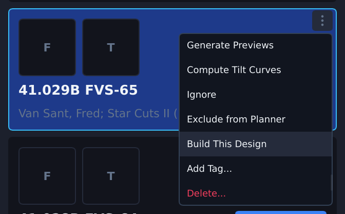
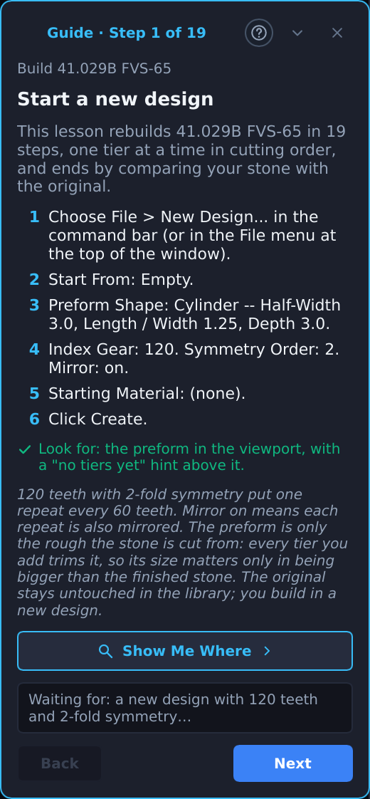
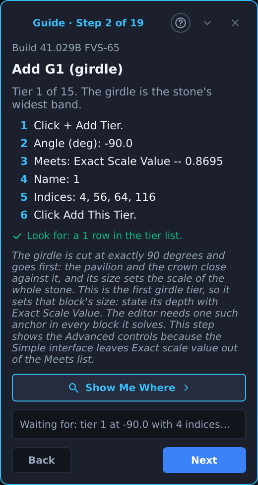
16Interface: Simple and Advanced, preferences, help
Simple and Advanced
One switch, the Simple | Advanced pill at the top left of
the window (also in Edit → Preferences...), sets how many controls the
whole program shows. Simple shows what most designs need and Advanced shows
every control. The switch only hides or shows controls: designs, settings
and files are never affected, and a hidden control keeps its value and still
applies. Where a hidden setting is not at its default, the panel says
“Some advanced settings are in use. Switch to Advanced to see
them.” A new installation starts in Simple; an installation used
before the switch existed stays in Advanced. Simple hides, for example, the
tier table's mast, solve, orbit and imported columns, Deep
Solve and the Baseline menu on the command bar, the Tilt Curve button, the Edit as Text and Angle
Sweep commands, and the advanced render settings. Chapter 17 of the user
manual
(apps/pleochroma-cut/docs/manual/17-preferences-and-accessibility.md)
lists them all.
Preferences
Edit → Preferences... (Ctrl+,) has these sections: Interface, Appearance, Rendering, Direct Manipulation, Faceting Machine, Updates, Graphics Driver (Linux only) and Tutorials. Interface Scale offers Automatic and eight fixed scales from 75 % to 200 %, and applies at the next start. High Contrast switches to near-black backgrounds, white text, visible borders and bright accents. It applies at once and covers the main window and the Compare and Rough Planner windows; the colors that carry meaning (the curve colors of the tilt graph, for example) and the rendered pictures keep their own colors. Larger Handles makes the angle, depth and index handles about 60 % bigger. Snap to Gear Steps When Dragging is the setting of the Snap button, and the app also remembers the Slice tool's Symmetric button. The Slice tool itself starts off in every session. Check for New Versions is off until you allow it; when it is on, the program asks GitHub once a day whether a newer release exists, and Check Now asks at once. On Linux with an AMD graphics card, Graphics Driver holds the RADV Shader Workaround switch, which turns off one optimization of the AMD shader compiler so that some stones render correctly on the graphics card, at about 10 % less GPU speed; it takes effect after a restart. Every choice is saved automatically.
Keyboard and screen readers
Every button, switch, list and field of the dialogs and windows can be reached with Tab and Shift+Tab, pressed with Space or Enter, and shows a bright ring while it has the keyboard. Lists are one Tab stop with Up and Down inside. Icon buttons are at least 20 pixels square, and a screen reader hears each button's name, whether a switch is on and which list row is selected. Hover any control for a one-sentence tooltip that says what it does and, when it is greyed out, why.
Help
Help → User Manual opens the manual in a window of its own, built into the program, with a chapter list, a search box that looks through every chapter, and Back and Forward buttons. Many panels carry a small ? button that opens the manual at the section about that panel, and F1 opens the page for whatever is on screen. Help → Glossary lists every term of the manual's glossary with a search box.
Command palette
Ctrl+K or Ctrl+Shift+P (also Edit →
Command Palette...) opens one small window that lists the program's actions,
more than 80 of them in seven categories: File, Edit, View, Tiers, Solve, Tools
and Help. Type a few letters of a name. The letters only have to appear in
order, so dsolve finds Deep Solve. The start of a word counts
for more, every word you type must match, and a match in the title beats a
match in the hidden search words. Before you type, the commands you ran
lately come first, up to eight; the list is not saved between sessions. It
lists only what belongs to the page you are on: the designing commands
(tiers, solving, undo, view modes, inspector) in the Edit view, the display
modes and render settings on the Live Render, the instructions commands on the
Cutting Instructions tab, and file, help and interface commands everywhere. A
command that cannot run now is shown dimmed with its reason (for example
“Open or create a design first”), and the palette follows the
same rules as the matching button, including a tutorial's locks. It lists
actions, not data: it does not search designs, tiers or files.
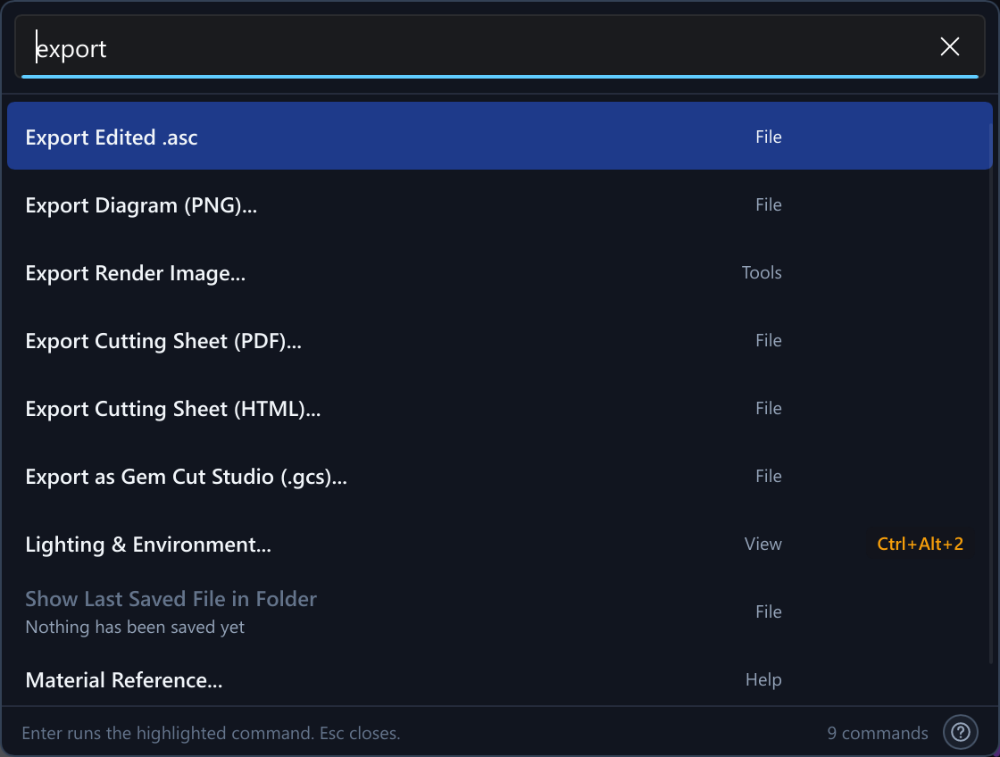
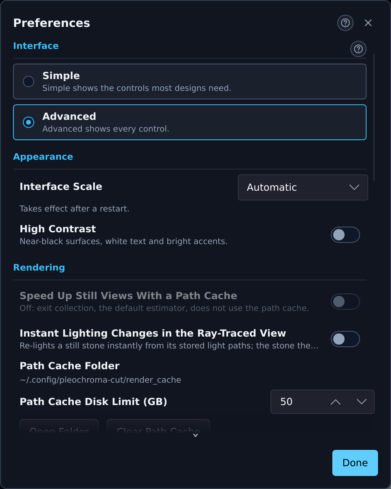
17Install, build and the command line
The browser version needs no installation (see the web app page). For the design library, GPU and remote rendering, get Pleochroma for Windows from the Microsoft Store, https://apps.microsoft.com/store/detail/9PF7KR401SNC, where the Store keeps it updated, download the desktop application from the downloads section of the overview, or install or build it with Cargo as below. Then start with the user manual. Windows, Linux and macOS are tested.
Install with Cargo
The workspace uses Rust edition 2024 and needs rust-version = "1.95"
or newer (workspace Cargo.toml), so install Rust with rustup and
run rustup update stable. On Linux and macOS the installer is
curl --proto '=https' --tlsv1.2 -sSf https://sh.rustup.rs | sh; on
Windows use winget install --id Rustlang.Rustup or
rustup-init.exe from rustup.rs, whose installer also offers to set
up the MSVC C++ build tools.
# CPU-only build
cargo install pleochroma-cut
# with the GPU path-tracing backend
cargo install pleochroma-cut --features gpu
# then start it (HDR environment-map loading is always included)
pleochroma-cut
# optional: the coordinator / remote render worker (opens the coordinator window;
# for a server without a window add --no-default-features --features worker)
cargo install pleochroma-workergit clone https://github.com/suitable-name/pleochroma.git
cd pleochroma
cargo run -p pleochroma-cut --release
# with the GPU compute kernel
cargo run -p pleochroma-cut --release --features gpu
The repository's own build scripts (scripts/pgo-build.ps1,
scripts/pgo-bolt-build.sh) make the Windows and Linux builds; the
macOS builds come from a GitHub Actions workflow. pleochroma-cut --help and
--version print the usage and the version instead of opening the window
(without a console, they show them in a message box). Every crate's crates.io and docs.rs pages are
listed in the workspace table, and the
renderer library's API reference is
docs.rs/pleochroma. The remote worker
quick start and the headless pleochroma-worker render command are
on the distributed rendering page.
The desktop app writes a log file (pleochroma-cut.log, next to the
executable, falling back to the temp directory) for diagnosing a
background-thread failure. Verbosity follows RUST_LOG, defaulting
to warn everywhere and info for
pleochroma and pleochroma_cut
(apps/pleochroma-cut/src/main.rs). The library is a local
database file, facet_diagrams.sqlite: the one in the folder the
program is started from if it exists there, otherwise the one beside
settings.toml, created on the first start
(PLEOCHROMA_LIBRARY names any other file). Settings are saved automatically to
settings.toml (in %APPDATA%\pleochroma-cut on Windows,
~/Library/Application Support/pleochroma-cut on macOS, and
$XDG_CONFIG_HOME/pleochroma-cut or ~/.config/pleochroma-cut
on Linux); a damaged file is renamed aside and the defaults are used.
The command-line tool
pleochroma-cli runs the same solver, optimizer, retarget gate and
sweep as the editor without a window or a GPU, so a number printed there is
the number the editor shows. A design is a .psdd,
.asc, .gem or .gcs file, read from its
extension. Every command that takes a design takes several, for example
pleochroma-cli metrics *.psdd --csv; each runs as it would
alone, and a design that fails prints its error under its name while the
others still run.
| Command | What it does |
|---|---|
info | Name, gear, symmetry, preform, material and the tier list, with each tier's standard code. Does not solve. |
solve | Solves every tier, checks that the facets enclose a stone and lists the manufacturability warnings; --out saves a .psdd, which also converts an .asc, .gem or .gcs. |
metrics | Table-up windowing, brilliance, extinction, fire and scintillation, the proportions and the yield; --tilt adds the tilt averages. The proportions include
girdle_line_pct_of_width, the girdle read at its line (its thinnest point), as the last CSV column, so
scripts that read columns by position keep working. |
validate | The warnings and the Good, Check or Problem verdict of the status strip. |
optimize | The Optimize tab's search, with ranked candidates; --budget (default 800), --starts (1 to 32, default 8), --seed, --preset; --out saves the best. |
retarget | The Retarget dialog's engine and validity gate for another material (--mode shift|optimize, --crown-fraction, --crown-ratio, --no-keep-look, --girdle-allowance, which thickens the girdle by up to 10 % as the dialog does but is off unless given). |
sweep | Sets one tier to every angle of a range and scores each one (--csv). |
snap-meets | Moves the depth of every tier that reaches no meet point onto the nearest corner of the stone cut so far, as the editor’s Snap to Meets fix does. --dry-run only reports; --max-move (millimeters) or --max-move-fraction (default 0.02, 2 % of the stone’s size) sets the limit; --out saves the design. Exit code 4 means a tier still has no meet point or facets were cut away. |
export | Writes .asc, .psdd, .gcs or the cutting sheet as .html or .pdf. |
render, tilt-video | Render a job file made by the render queue (section 14). |
# from a clone of the repository (an installed binary is just: pleochroma-cli info round.asc)
cargo run -p pleochroma-cli --release -- info round.asc
cargo run -p pleochroma-cli --release -- solve round.asc --out round.psdd
cargo run -p pleochroma-cli --release -- metrics round.psdd --material Sapphire --json
cargo run -p pleochroma-cli --release -- validate round.asc --json
cargo run -p pleochroma-cli --release -- optimize round.psdd --preset brilliance --budget 400 --starts 4 --seed 7 --out better.psdd
cargo run -p pleochroma-cli --release -- retarget round.psdd --material Sapphire --crown-fraction 0.33 --out sapphire.psdd
cargo run -p pleochroma-cli --release -- sweep round.psdd --tier "Pavilion Main" --from 39 --to 43 --step 0.5 --csv sweep.csv
cargo run -p pleochroma-cli --release -- snap-meets better.psdd --dry-run
cargo run -p pleochroma-cli --release -- snap-meets better.psdd --max-move 0.15 --out snapped.psdd
cargo run -p pleochroma-cli --release -- export round.psdd --format html --out sheet.html
cargo run -p pleochroma-cli --release -- export round.psdd --format pdf --out sheet.pdf
# every command has its own help page
cargo run -p pleochroma-cli --release -- retarget --help
Angles are positive numbers, as the tier table shows them: the tier says which
side of the girdle it is on, and a sign in front is ignored. Text reports and
CSV print every angle unsigned, whereas --json keeps the signed
convention of the design files, in which a pavilion angle is negative. A tier is
named by its name (P1, G1/G2) or by #N,
the Nth row of the tier list. --material NAME is a built-in or a
custom material (from --db FILE, a design library that is opened
read-only, or carried by the design file), --ri N a bare flat
refractive index, and --lighting NAME chooses the light the score
is taken under (the Grading tray by default).
Exit code 0 means done, 1 a wrong command line, 2 a design that cannot be used
or a result that was refused (nothing is written), 3 a file that could not be
read or written, 4 a validate verdict of Problem, or a snap-meets that leaves a tier
with no meet point or cuts facets away, and 5 a failed or
stopped render. A file named by --out is written only when the
command succeeds. Text, JSON and CSV output are deterministic: the same command
on the same files prints the same bytes, and the result of optimize
does not depend on the number of processor cores. retarget accepts
only a Valid result, since a command line has nobody to look at the stone.
.gcs export is experimental, as in the editor. A newer release
is named in one line on standard error, never on standard output;
--no-update-check turns that off.
GPU builds keep their compiled shaders in the user cache folder, so only the first GPU
render compiles them; pleochroma-cli render and tilt-video say once
that the graphics card’s shaders are being compiled instead of sitting at 0 samples.
With a Vulkan driver, Pleochroma Cut, the coordinator and the render computers compile
several material types at once on extra GPU devices: by default half the processor cores,
at most 4; PLEOCHROMA_SHADER_THREADS sets the number, and 1 builds them one
after another. On Linux with an AMD graphics card, --radv-workaround
on|off sets the same shader-compiler workaround as the Preferences switch.
The tool lives in apps/pleochroma-cli.
Ray-Traced and Path-Traced
Edit has Solid, Ray-Traced (key 5), Path-Traced and Diagram, and Solid with a tracer draws the facet edges over its picture; Live Render also offers Ray-Traced. Advanced settings expose Anti-Aliasing and Fire. Export freezes the chosen engine and options; thumbnails can use Ray-Traced, and Compare uses eight taps with Fire.
Ray-Traced is a deterministic approximation: one d-line index, or three fixed indices with Fire, a spectral absorption tint in 10 nm bands and 1/4/8/16 AA taps. It finishes at the tap count without denoising. It omits polarization, birefringent doubling, scattering, zoning and edge rounding. Path-Traced retains the spectral model. Optical metrics, tilt sweeps and diagnostics keep their separate analytic tracer.
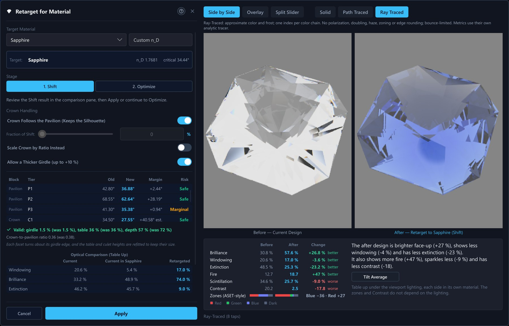